Chapter 2: Atoms, Molecules, and Ions¶
Introduction¶
Learning Objectives
- Early Ideas in Atomic Theory
- Evolution of Atomic Theory
- Atomic Structure and Symbolism
- Chemical Formulas
- The Periodic Table
- Ionic and Molecular Compounds
- Chemical Nomenclature
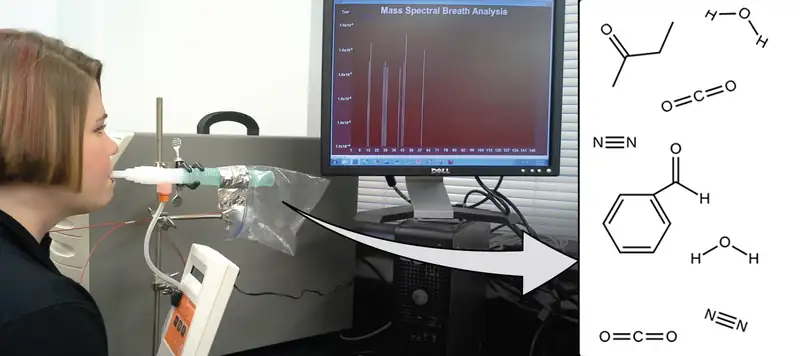
Lung diseases and lung cancers are among the world's most devastating illnesses partly due to delayed detection and diagnosis. Most noninvasive screening procedures aren't reliable, and patients often resist more accurate methods due to discomfort with the procedures or with the potential danger that the procedures cause. But what if you could be accurately diagnosed through a simple breath test?
Early detection of biomarkers, substances that indicate an organism’s disease or physiological state, could allow diagnosis and treatment before a condition becomes serious or irreversible. Recent studies have shown that your exhaled breath can contain molecules that may be biomarkers for recent exposure to environmental contaminants or for pathological conditions ranging from asthma to lung cancer. Scientists are working to develop biomarker “fingerprints” that could be used to diagnose a specific disease based on the amounts and identities of certain molecules in a patient’s exhaled breath. In Sangeeta Bhatia's lab at MIT, a team used substances that react specifically inside diseased lung tissue; the products of the reactions will be present as biomarkers that can be identified through mass spectrometry (an analytical method discussed later in the chapter). A potential application would allow patients with early symptoms to inhale or ingest a "sensor" substance, and, minutes later, to breathe into a detector for diagnosis. Similar research by scientists such as Laura López-Sánchez has provided similar processes for lung cancer. An essential concept underlying this goal is that of a molecule’s identity, which is determined by the numbers and types of atoms it contains, and how they are bonded together. This chapter will describe some of the fundamental chemical principles related to the composition of matter, including those central to the concept of molecular identity.
2.1 Early Ideas in Atomic Theory¶
Learning Objectives
By the end of this section, you will be able to:
- State the postulates of Dalton’s atomic theory
- Use postulates of Dalton’s atomic theory to explain the laws of definite and multiple proportions
The earliest recorded discussion of the basic structure of matter comes from ancient Greek philosophers, the scientists of their day. In the fifth century BC, Leucippus and Democritus argued that all matter was composed of small, finite particles that they called atomos, a term derived from the Greek word for “indivisible.” They thought of atoms as moving particles that differed in shape and size, and which could join together. Later, Aristotle and others came to the conclusion that matter consisted of various combinations of the four “elements”—fire, earth, air, and water—and could be infinitely divided. Interestingly, these philosophers thought about atoms and “elements” as philosophical concepts, but apparently never considered performing experiments to test their ideas.
The Aristotelian view of the composition of matter held sway for over two thousand years, until English schoolteacher John Dalton helped to revolutionize chemistry with his hypothesis that the behavior of matter could be explained using an atomic theory. First published in 1807, many of Dalton’s hypotheses about the microscopic features of matter are still valid in modern atomic theory. Here are the postulates of Dalton’s atomic theory.
1. Matter is composed of exceedingly small particles called atoms. An atom is the smallest unit of an element that can participate in a chemical change.
2. An element consists of only one type of atom, which has a mass that is characteristic of the element and is the same for all atoms of that element (Figure 2.2). A macroscopic sample of an element contains an incredibly large number of atoms, all of which have identical chemical properties.
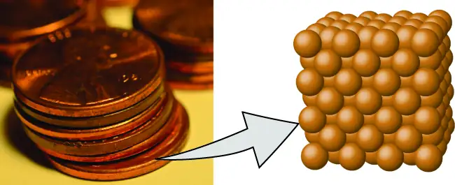
3. Atoms of one element differ in properties from atoms of all other elements.
4. A compound consists of atoms of two or more elements combined in a small, whole-number ratio. In a given compound, the numbers of atoms of each of its elements are always present in the same ratio (Figure 2.3).
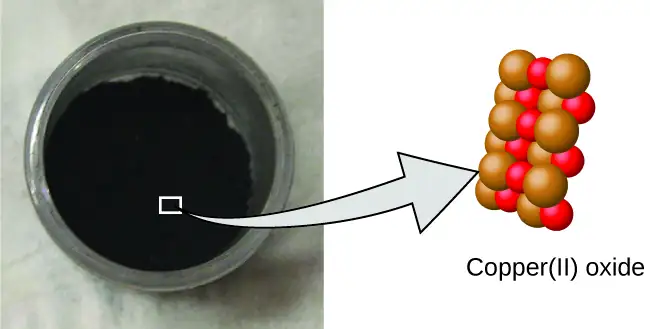
5. Atoms are neither created nor destroyed during a chemical change, but are instead rearranged to yield substances that are different from those present before the change (Figure 2.4).
![The left stoppered bottle contains copper and oxygen. There is a callout which shows that copper is made up of many sphere-shaped atoms. The atoms are densely organized. The open space of the bottle contains oxygen gas, which is made up of bonded pairs of oxygen atoms that are evenly spaced. The right stoppered bottle shows the compound copper two oxide, which is a black, powdery substance. A callout from the powder shows a molecule of copper two oxide, which contains copper atoms that are clustered together with an equal number of oxygen atoms.](img/cnx-chem-02-01-dalton3.webp)
Dalton’s atomic theory provides a microscopic explanation of the many macroscopic properties of matter that you’ve learned about. For example, if an element such as copper consists of only one kind of atom, then it cannot be broken down into simpler substances, that is, into substances composed of fewer types of atoms. And if atoms are neither created nor destroyed during a chemical change, then the total mass of matter present when matter changes from one type to another will remain constant (the law of conservation of matter).
Example 2.1 Testing Dalton’s Atomic Theory
In the following drawing, the green spheres represent atoms of a certain element. The purple spheres represent atoms of another element. If the spheres touch, they are part of a single unit of a compound. Does the following chemical change represented by these symbols violate any of the ideas of Dalton’s atomic theory? If so, which one?
Solution
The starting materials consist of two green spheres and two purple spheres. The products consist of only one green sphere and one purple sphere. This violates Dalton’s postulate that atoms are neither created nor destroyed during a chemical change, but are merely redistributed. (In this case, atoms appear to have been destroyed.)
Check Your Learning
In the following drawing, the green spheres represent atoms of a certain element. The purple spheres represent atoms of another element. If the spheres touch, they are part of a single unit of a compound. Does the following chemical change represented by these symbols violate any of the ideas of Dalton’s atomic theory? If so, which one?
Answer:
The starting materials consist of four green spheres and two purple spheres. The products consist of four green spheres and two purple spheres. This does not violate any of Dalton’s postulates: Atoms are neither created nor destroyed, but are redistributed in small, whole-number ratios.
Dalton knew of the experiments of French chemist Joseph Proust, who demonstrated that all samples of a pure compound contain the same elements in the same proportion by mass. This statement is known as the law of definite proportions or the law of constant composition. The suggestion that the numbers of atoms of the elements in a given compound always exist in the same ratio is consistent with these observations. For example, when different samples of isooctane (a component of gasoline and one of the standards used in the octane rating system) are analyzed, they are found to have a carbon-to-hydrogen mass ratio of 5.33:1, as shown in Table 2.1.
Table 2.1
| Constant Composition of Isooctane | |||
|---|---|---|---|
| Sample | Carbon | Hydrogen | Mass Ratio |
| A | 14.82 g | 2.78 g | \(\frac{\text{14.82 g carbon}}{\text{2.78 g hydrogen}}\:=\:\frac{\text{5.33 g carbon}}{\text{1.00 g hydrogen}}\) |
| B | 22.33 g | 4.19 g | \(\frac{\text{22.33 g carbon}}{\text{4.19 g hydrogen}}\:=\:\frac{\text{5.33 g carbon}}{\text{1.00 g hydrogen}}\) |
| C | 19.40 g | 3.64 g | \(\frac{\text{19.40 g carbon}}{\text{3.63 g hydrogen}}\:=\:\frac{\text{5.33 g carbon}}{\text{1.00 g hydrogen}}\) |
It is worth noting that although all samples of a particular compound have the same mass ratio, the converse is not true in general. That is, samples that have the same mass ratio are not necessarily the same substance. For example, there are many compounds other than isooctane that also have a carbon-to-hydrogen mass ratio of 5.33:1.00.
Dalton also used data from Proust, as well as results from his own experiments, to formulate another interesting law. The law of multiple proportions states that when two elements react to form more than one compound, a fixed mass of one element will react with masses of the other element in a ratio of small, whole numbers. For example, copper and chlorine can form a green, crystalline solid with a mass ratio of 0.558 g chlorine to 1 g copper, as well as a brown crystalline solid with a mass ratio of 1.116 g chlorine to 1 g copper. These ratios by themselves may not seem particularly interesting or informative; however, if we take a ratio of these ratios, we obtain a useful and possibly surprising result: a small, whole-number ratio.
This 2-to-1 ratio means that the brown compound has twice the amount of chlorine per amount of copper as the green compound.
This can be explained by atomic theory if the copper-to-chlorine ratio in the brown compound is 1 copper atom to 2 chlorine atoms, and the ratio in the green compound is 1 copper atom to 1 chlorine atom. The ratio of chlorine atoms (and thus the ratio of their masses) is therefore 2 to 1 (Figure 2.5).
![Figure A shows a pile of green powder. A callout shows that the green powder is made up of a lattice of copper atoms interspersed with chlorine atoms. The atoms are color coded brown for copper and green for chlorine. The number of copper atoms is equal to the number of chlorine atoms in the molecule. Figure B shows a pile of brown powder. A callout shows that the brown powder is also made up of copper and chlorine atoms similar to the molecule shown in figure A. However there appears to be two chlorine atoms for every copper atom in this molecule. The copper atoms in figure B bond with both the chlorine atoms and the other copper atoms. The copper atoms in figure A only bond with the chlorine atoms.](img/cnx-chem-02-01-multprop.webp)
Example 2.2 Laws of Definite and Multiple Proportions
A sample of compound A (a clear, colorless gas) is analyzed and found to contain 4.27 g carbon and 5.69 g oxygen. A sample of compound B (also a clear, colorless gas) is analyzed and found to contain 5.19 g carbon and 13.84 g oxygen. Are these data an example of the law of definite proportions, the law of multiple proportions, or neither? What do these data tell you about substances A and B?
Solution
In compound A, the mass ratio of oxygen to carbon is:
In compound B, the mass ratio of oxygen to carbon is:
The ratio of these ratios is:
This supports the law of multiple proportions. This means that A and B are different compounds, with A having one-half as much oxygen per amount of carbon (or twice as much carbon per amount of oxygen) as B. A possible pair of compounds that would fit this relationship would be A = CO and B = CO2.
Check Your Learning
A sample of compound X (a clear, colorless, combustible liquid with a noticeable odor) is analyzed and found to contain 14.13 g carbon and 2.96 g hydrogen. A sample of compound Y (a clear, colorless, combustible liquid with a noticeable odor that is slightly different from X’s odor) is analyzed and found to contain 19.91 g carbon and 3.34 g hydrogen. Are these data an example of the law of definite proportions, the law of multiple proportions, or neither? What do these data tell you about substances X and Y?
Answer:
In compound X, the mass ratio of carbon to hydrogen is \(\frac{\text{14.13 g C}}{\text{2.96 g H}}.\) In compound Y, the mass ratio of carbon to hydrogen is \(\frac{\text{19.91 g C}}{\text{3.34 g H}}.\) The ratio of these ratios is \(\frac{\frac{\text{14.13 g C}}{\text{2.96 g H}}}{\frac{\text{19.91 g C}}{\text{3.34 g H}}}\:=\:\frac{\text{4.77 g C/g H}}{\text{5.96 g C/g H}}\:=0.800=\:\frac{4}{5}.\) This small, whole-number ratio supports the law of multiple proportions. This means that X and Y are different compounds.
2.2 Evolution of Atomic Theory¶
Learning Objectives
By the end of this section, you will be able to:
- Outline milestones in the development of modern atomic theory
- Summarize and interpret the results of the experiments of Thomson, Millikan, and Rutherford
- Describe the three subatomic particles that compose atoms
- Define isotopes and give examples for several elements
If matter is composed of atoms, what are atoms composed of? Are they the smallest particles, or is there something smaller? In the late 1800s, a number of scientists interested in questions like these investigated the electrical discharges that could be produced in low-pressure gases, with the most significant discovery made by English physicist J. J. Thomson using a cathode ray tube. This apparatus consisted of a sealed glass tube from which almost all the air had been removed; the tube contained two metal electrodes. When high voltage was applied across the electrodes, a visible beam called a cathode ray appeared between them. This beam was deflected toward the positive charge and away from the negative charge, and was produced in the same way with identical properties when different metals were used for the electrodes. In similar experiments, the ray was simultaneously deflected by an applied magnetic field, and measurements of the extent of deflection and the magnetic field strength allowed Thomson to calculate the charge-to-mass ratio of the cathode ray particles. The results of these measurements indicated that these particles were much lighter than atoms (Figure 2.6).
![Figure A shows a photo of J. J. Thomson working at a desk. Figure B shows a photograph of a cathode ray tube. It is a long, glass tube that is narrow at the left end but expands into a large bulb on the right end. The entire cathode tube is sitting on a wooden stand. Figure C shows the parts of the cathode ray tube. The cathode ray tube consists of a cathode and an anode. The cathode, which has a negative charge, is located in a small bulb of glass on the left side of the cathode ray tube. To the left of the cathode it says “High voltage” and indicates a positive and negative charge. The anode, which has a positive charge, is located to the right of the cathode. Two charged plates are located to the right of the anode, and are connected to a battery and two magnets. The magnets are labeled “S” and “N.” A cathode ray is generated from the cathode, travels through the anode and into a wider part of the cathode ray tube, where it travels between a positively charged electrode plate and a negatively charged electrode plate. The ray bends upward and continues to travel until it hits the wide part of the tube on the right. The rightmost end of the tube contains a printed scale that allows one to measure how much the ray was deflected.](img/cnx-chem-02-02-cathoderay.webp)
Based on his observations, here is what Thomson proposed and why: The particles are attracted by positive (+) charges and repelled by negative (−) charges, so they must be negatively charged (like charges repel and unlike charges attract); they are less massive than atoms and indistinguishable, regardless of the source material, so they must be fundamental, subatomic constituents of all atoms. Although controversial at the time, Thomson’s idea was gradually accepted, and his cathode ray particle is what we now call an electron, a negatively charged, subatomic particle with a mass more than one thousand-times less that of an atom. The term “electron” was coined in 1891 by Irish physicist George Stoney, from “electric ion.”
Link to Learning
Click here to hear Thomson describe his discovery in his own voice.
In 1909, more information about the electron was uncovered by American physicist Robert A. Millikan via his “oil drop” experiments. Millikan created microscopic oil droplets, which could be electrically charged by friction as they formed or by using X-rays. These droplets initially fell due to gravity, but their downward progress could be slowed or even reversed by an electric field lower in the apparatus. By adjusting the electric field strength and making careful measurements and appropriate calculations, Millikan was able to determine the charge on individual drops (Figure 2.7).
![The experimental apparatus consists of an oil atomizer which sprays fine oil droplets into a large, sealed container. The sprayed oil lands on a positively charged brass plate with a pinhole at the center. As the drops fall through the pinhole, they travel through X-rays that are emitted within the container. This gives the oil droplets an electrical charge. The oil droplets land on a brass plate that is negatively charged. A telescopic eyepiece penetrates the inside of the container so that the user can observe how the charged oil droplets respond to the negatively charged brass plate. The table that accompanies this figure gives the charge, in coulombs or C, for 5 oil drops. Oil drop A has a charge of 4.8 times 10 to the negative 19 power. Oil drop B has a charge of 3.2 times 10 to the negative 19 power. Oil drop C has a charge of 6.4 times 10 to the negative 19 power. Oil drop D has a charge of 1.6 times 10 to the negative 19 power. Oil drop E has a charge of 4.8 times 10 to the negative 19 power.](img/cnx-chem-02-02-millikan.webp)
Looking at the charge data that Millikan gathered, you may have recognized that the charge of an oil droplet is always a multiple of a specific charge, 1.6 \(\times\) 10−19 C. Millikan concluded that this value must therefore be a fundamental charge—the charge of a single electron—with his measured charges due to an excess of one electron (1 times 1.6 \(\times\) 10−19 C), two electrons (2 times 1.6 \(\times\) 10−19 C), three electrons (3 times 1.6 \(\times\) 10−19 C), and so on, on a given oil droplet. Since the charge of an electron was now known due to Millikan’s research, and the charge-to-mass ratio was already known due to Thomson’s research (1.759 \(\times\) 1011 C/kg), it only required a simple calculation to determine the mass of the electron as well.
Scientists had now established that the atom was not indivisible as Dalton had believed, and due to the work of Thomson, Millikan, and others, the charge and mass of the negative, subatomic particles—the electrons—were known. However, the positively charged part of an atom was not yet well understood. In 1904, Thomson proposed the “plum pudding” model of atoms, which described a positively charged mass with an equal amount of negative charge in the form of electrons embedded in it, since all atoms are electrically neutral. A competing model had been proposed in 1903 by Hantaro Nagaoka, who postulated a Saturn-like atom, consisting of a positively charged sphere surrounded by a halo of electrons (Figure 2.8).
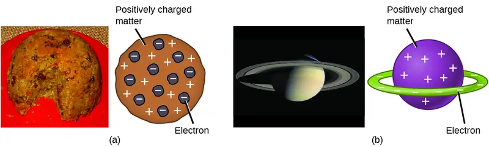
The next major development in understanding the atom came from Ernest Rutherford, a physicist from New Zealand who largely spent his scientific career in Canada and England. He performed a series of experiments using a beam of high-speed, positively charged alpha particles (α particles) that were produced by the radioactive decay of radium; α particles consist of two protons and two neutrons (you will learn more about radioactive decay in the chapter on nuclear chemistry). Rutherford and his colleagues Hans Geiger (later famous for the Geiger counter) and Ernest Marsden aimed a beam of α particles, the source of which was embedded in a lead block to absorb most of the radiation, at a very thin piece of gold foil and examined the resultant scattering of the α particles using a luminescent screen that glowed briefly where hit by an α particle.
What did they discover? Most particles passed right through the foil without being deflected at all. However, some were diverted slightly, and a very small number were deflected almost straight back toward the source (Figure 2.9). Rutherford described finding these results: “It was quite the most incredible event that has ever happened to me in my life. It was almost as incredible as if you fired a 15-inch shell at a piece of tissue paper and it came back and hit you.”1
![This figure shows a box on the left that contains a radium source of alpha particles which generates a beam of alpha particles. The beam travels through an opening within a ring-shaped luminescent screen which is used to detect scattered alpha particles. A piece of thin gold foil is at the center of the ring formed by the screen. When the beam encounters the gold foil, most of the alpha particles pass straight through it and hit the luminescent screen directly behind the foil. Some of the alpha particles are slightly deflected by the foil and hit the luminescent screen off to the side of the foil. Some alpha particles are significantly deflected and bounce back to hit the front of the screen.](img/cnx-chem-02-02-rutherford.webp)
Here is what Rutherford deduced: Because most of the fast-moving α particles passed through the gold atoms undeflected, they must have traveled through essentially empty space inside the atom. Alpha particles are positively charged, so deflections arose when they encountered another positive charge (like charges repel each other). Since like charges repel one another, the few positively charged α particles that changed paths abruptly must have hit, or closely approached, another body that also had a highly concentrated, positive charge. Since the deflections occurred a small fraction of the time, this charge only occupied a small amount of the space in the gold foil. Analyzing a series of such experiments in detail, Rutherford drew two conclusions:
- The volume occupied by an atom must consist of a large amount of empty space.
- A small, relatively heavy, positively charged body, the nucleus, must be at the center of each atom.
Link to Learning
View this simulation of the Rutherford gold foil experiment. Adjust the slit width to produce a narrower or broader beam of α particles to see how that affects the scattering pattern.
This analysis led Rutherford to propose a model in which an atom consists of a very small, positively charged nucleus, in which most of the mass of the atom is concentrated, surrounded by the negatively charged electrons, so that the atom is electrically neutral (Figure 2.10). After many more experiments, Rutherford also discovered that the nuclei of other elements contain the hydrogen nucleus as a “building block,” and he named this more fundamental particle the proton, the positively charged, subatomic particle found in the nucleus. With one addition, which you will learn next, this nuclear model of the atom, proposed over a century ago, is still used today.
![The left diagram shows a green beam of alpha particles hitting a rectangular piece of gold foil. Some of the alpha particles bounce backwards after hitting the foil. However, most of the particles travel through the foil, with some being deflected as they pass through the foil. A callout box shows a magnified cross section of the gold foil. Most of the alpha particles are not deflected, but pass straight through the foil because they travel between the gold atoms. A very small number of alpha particles are significantly deflected when they hit the nucleus of the gold atoms straight on. A few alpha particles are slightly deflected because they glanced off of the nucleus of a gold atom.](img/cnx-chem-02-02-goldfoil3.webp)
Link to Learning
The Rutherford Scattering simulation allows you to investigate the differences between a “plum pudding” atom and a Rutherford atom by firing α particles at each type of atom.
Another important finding was the discovery of isotopes. During the early 1900s, scientists identified several substances that appeared to be new elements, isolating them from radioactive ores. For example, a “new element” produced by the radioactive decay of thorium was initially given the name mesothorium. However, a more detailed analysis showed that mesothorium was chemically identical to radium (another decay product), despite having a different atomic mass. This result, along with similar findings for other elements, led the English chemist Frederick Soddy to realize that an element could have types of atoms with different masses that were chemically indistinguishable. These different types are called isotopes—atoms of the same element that differ in mass. Soddy was awarded the Nobel Prize in Chemistry in 1921 for this discovery.
One puzzle remained: The nucleus was known to contain almost all of the mass of an atom, with the number of protons only providing half, or less, of that mass. Different proposals were made to explain what constituted the remaining mass, including the existence of neutral particles in the nucleus. As you might expect, detecting uncharged particles is very challenging, and it was not until 1932 that James Chadwick found evidence of neutrons, uncharged, subatomic particles with a mass approximately the same as that of protons. The existence of the neutron also explained isotopes: They differ in mass because they have different numbers of neutrons, but they are chemically identical because they have the same number of protons. This will be explained in more detail later in this chapter.
2.3 Atomic Structure and Symbolism¶
Learning Objectives
By the end of this section, you will be able to:
- Write and interpret symbols that depict the atomic number, mass number, and charge of an atom or ion
- Define the atomic mass unit and average atomic mass
- Calculate average atomic mass and isotopic abundance
The development of modern atomic theory revealed much about the inner structure of atoms. It was learned that an atom contains a very small nucleus composed of positively charged protons and uncharged neutrons, surrounded by a much larger volume of space containing negatively charged electrons. The nucleus contains the majority of an atom’s mass because protons and neutrons are much heavier than electrons, whereas electrons occupy almost all of an atom’s volume. The diameter of an atom is on the order of 10−10 m, whereas the diameter of the nucleus is roughly 10−15 m—about 100,000 times smaller. For a perspective about their relative sizes, consider this: If the nucleus were the size of a blueberry, the atom would be about the size of a football stadium (Figure 2.11).
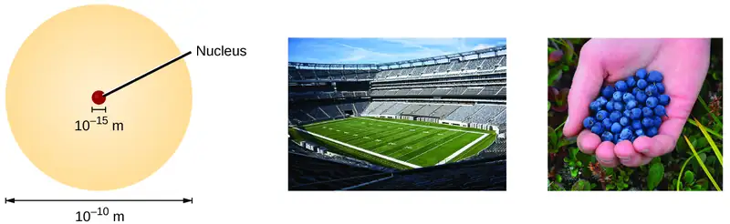
Atoms—and the protons, neutrons, and electrons that compose them—are extremely small. For example, a carbon atom weighs less than 2 \(\times\) 10−23 g, and an electron has a charge of less than 2 \(\times\) 10−19 C (coulomb). When describing the properties of tiny objects such as atoms, we use appropriately small units of measure, such as the unified atomic mass unit (u) and the fundamental unit of charge (e). The unified atomic mass unit is defined as exactly 1/12 of the mass of a single atom of the carbon-12 isotope (more on isotopes is provided later in this section) and is equal to 1.6605 \(\times\) 10−24 g. The dalton (Da) is an alternative mass unit that is equivalent to the u. Many literature resources, including this text, use the older term atomic mass unit (amu) when referring to the u or the Da. The fundamental unit of charge (also called the elementary charge) equals the magnitude of the charge of an electron (e) with e = 1.602 \(\times\) 10−19 C.
A proton has a mass of 1.0073 amu and a charge of 1+. A neutron is a slightly heavier particle with a mass 1.0087 amu and a charge of zero; as its name suggests, it is neutral. The electron has a charge of 1− and is a much lighter particle with a mass of about 0.00055 amu (it would take about 1800 electrons to equal the mass of one proton). The properties of these fundamental particles are summarized in Table 2.2. (An observant student might notice that the sum of an atom’s subatomic particles does not equal the atom’s actual mass: The total mass of six protons, six neutrons, and six electrons is 12.0993 amu, slightly larger than 12.00 amu. This “missing” mass is known as the mass defect, and you will learn about it in the chapter on nuclear chemistry.)
Table 2.2
| Properties of Subatomic Particles | |||||
|---|---|---|---|---|---|
| Name | Location | Charge (C) | Unit Charge | Mass (amu) | Mass (g) |
| electron | outside nucleus | −1.602 \(\times\) 10−19 | 1− | 0.00055 | 0.00091 \(\times\) 10−24 |
| proton | nucleus | 1.602 \(\times\)10−19 | 1+ | 1.00727 | 1.67262 \(\times\) 10−24 |
| neutron | nucleus | 0 | 0 | 1.00866 | 1.67493 \(\times\) 10−24 |
The number of protons in the nucleus of an atom is its atomic number (Z). This is the defining trait of an element: Its value determines the identity of the atom. For example, any atom that contains six protons is the element carbon and has the atomic number 6, regardless of how many neutrons or electrons it may have. A neutral atom must contain the same number of positive and negative charges, so the number of protons equals the number of electrons. Therefore, the atomic number also indicates the number of electrons in an atom. The total number of protons and neutrons in an atom is called its mass number (A). The number of neutrons is therefore the difference between the mass number and the atomic number: A – Z = number of neutrons.
Atoms are electrically neutral if they contain the same number of positively charged protons and negatively charged electrons. When the numbers of these subatomic particles are not equal, the atom is electrically charged and is called an ion. The charge of an atom is defined as follows:
Atomic charge = number of protons − number of electrons
As will be discussed in more detail later in this chapter, atoms (and molecules) typically acquire charge by gaining or losing electrons. An atom that gains one or more electrons will exhibit a negative charge and is called an anion. Positively charged atoms called cations are formed when an atom loses one or more electrons. For example, a neutral sodium atom (Z = 11) has 11 electrons. If this atom loses one electron, it will become a cation with a 1+ charge (11 − 10 = 1+). A neutral oxygen atom (Z = 8) has eight electrons, and if it gains two electrons it will become an anion with a 2− charge (8 − 10 = 2−).
Example 2.3 Composition of an Atom
Iodine is an essential trace element in our diet; it is needed to produce thyroid hormone. Insufficient iodine in the diet can lead to the development of a goiter, an enlargement of the thyroid gland (Figure 2.12).
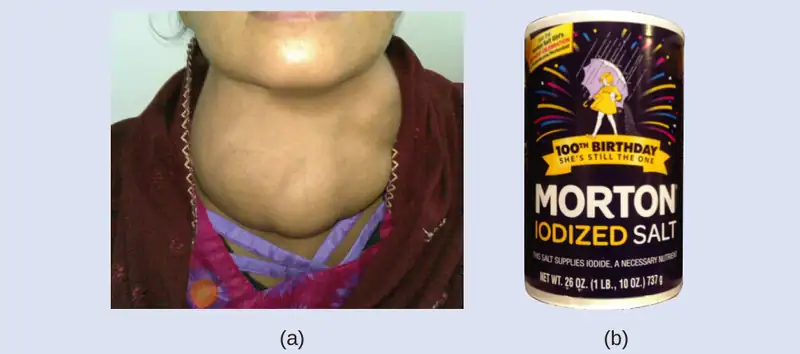
The addition of small amounts of iodine to table salt (iodized salt) has essentially eliminated this health concern in the United States, but as much as 40% of the world’s population is still at risk of iodine deficiency. The iodine atoms are added as anions, and each has a 1− charge and a mass number of 127. Determine the numbers of protons, neutrons, and electrons in one of these iodine anions.
Solution
The atomic number of iodine (53) tells us that a neutral iodine atom contains 53 protons in its nucleus and 53 electrons outside its nucleus. Because the sum of the numbers of protons and neutrons equals the mass number, 127, the number of neutrons is 74 (127 − 53 = 74). Since the iodine is added as a 1− anion, the number of electrons is 54 [53 – (1–) = 54].
Check Your Learning
An ion of platinum has a mass number of 195 and contains 74 electrons. How many protons and neutrons does it contain, and what is its charge?
Answer:
78 protons; 117 neutrons; charge is 4+
Chemical Symbols¶
A chemical symbol is an abbreviation that we use to indicate an element or an atom of an element. For example, the symbol for mercury is Hg (Figure 2.13). We use the same symbol to indicate one atom of mercury (microscopic domain) or to label a container of many atoms of the element mercury (macroscopic domain).
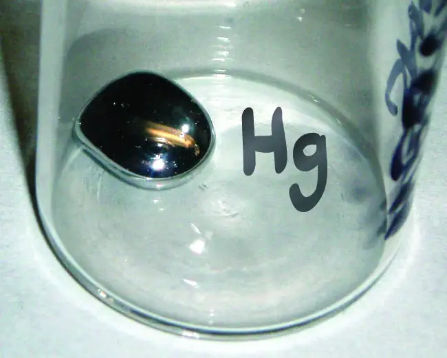
The symbols for several common elements and their atoms are listed in Table 2.3. Some symbols are derived from the common name of the element; others are abbreviations of the name in another language. Most symbols have one or two letters, but three-letter symbols have been used to describe some elements that have atomic numbers greater than 112. To avoid confusion with other notations, only the first letter of a symbol is capitalized. For example, Co is the symbol for the element cobalt, but CO is the notation for the compound carbon monoxide, which contains atoms of the elements carbon (C) and oxygen (O). All known elements and their symbols are in the periodic table in Figure 2.26 (also found in Appendix A).
Table 2.3
| Some Common Elements and Their Symbols | |||
|---|---|---|---|
| Element | Symbol | Element | Symbol |
| aluminum | Al | iron | Fe (from ferrum) |
| bromine | Br | lead | Pb (from plumbum) |
| calcium | Ca | magnesium | Mg |
| carbon | C | mercury | Hg (from hydrargyrum) |
| chlorine | Cl | nitrogen | N |
| chromium | Cr | oxygen | O |
| cobalt | Co | potassium | K (from kalium) |
| copper | Cu (from cuprum) | silicon | Si |
| fluorine | F | silver | Ag (from argentum) |
| gold | Au (from aurum) | sodium | Na (from natrium) |
| helium | He | sulfur | S |
| hydrogen | H | tin | Sn (from stannum) |
| iodine | I | zinc | Zn |
Traditionally, the discoverer (or discoverers) of a new element names the element. However, until the name is recognized by the International Union of Pure and Applied Chemistry (IUPAC), the recommended name of the new element is based on the Latin word(s) for its atomic number. For example, element 106 was called unnilhexium (Unh), element 107 was called unnilseptium (Uns), and element 108 was called unniloctium (Uno) for several years. These elements are now named after scientists (or occasionally locations); for example, element 106 is now known as seaborgium (Sg) in honor of Glenn Seaborg, a Nobel Prize winner who was active in the discovery of several heavy elements. Element 109 was named in honor of Lise Meitner, who discovered nuclear fission, a phenomenon that would have world-changing impacts; Meitner also contributed to the discovery of some major isotopes, discussed immediately below.
Link to Learning
Visit this site to learn more about IUPAC, the International Union of Pure and Applied Chemistry, and explore its periodic table.
Isotopes¶
The symbol for a specific isotope of any element is written by placing the mass number as a superscript to the left of the element symbol (Figure 2.14). The atomic number is sometimes written as a subscript preceding the symbol, but since this number defines the element’s identity, as does its symbol, it is often omitted. For example, magnesium exists as a mixture of three isotopes, each with an atomic number of 12 and with mass numbers of 24, 25, and 26, respectively. These isotopes can be identified as 24Mg, 25Mg, and 26Mg. These isotope symbols are read as “element, mass number” and can be symbolized consistent with this reading. For instance, 24Mg is read as “magnesium 24,” and can be written as “magnesium-24” or “Mg-24.” 25Mg is read as “magnesium 25,” and can be written as “magnesium-25” or “Mg-25.” All magnesium atoms have 12 protons in their nucleus. They differ only because a 24Mg atom has 12 neutrons in its nucleus, a 25Mg atom has 13 neutrons, and a 26Mg has 14 neutrons.
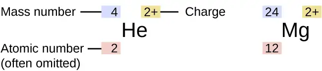
Information about the naturally occurring isotopes of elements with atomic numbers 1 through 10 is given in Table 2.4. Note that in addition to standard names and symbols, the isotopes of hydrogen are often referred to using common names and accompanying symbols. Hydrogen-2, symbolized 2H, is also called deuterium and sometimes symbolized D. Hydrogen-3, symbolized 3H, is also called tritium and sometimes symbolized T.
Table 2.4
| Nuclear Compositions of Atoms of the Very Light Elements | ||||||
|---|---|---|---|---|---|---|
| Element | Symbol | Atomic Number | Number of Protons | Number of Neutrons | Mass (amu) | % Natural Abundance |
| hydrogen | \({}_{1}^{1}\text{H}\) (protium) |
1 | 1 | 0 | 1.0078 | 99.989 |
| \({}_{1}^{2}\text{H}\) (deuterium) |
1 | 1 | 1 | 2.0141 | 0.0115 | |
| \({}_{1}^{3}\text{H}\) (tritium) |
1 | 1 | 2 | 3.01605 | — (trace) | |
| helium | \({}_{2}^{3}\text{He}\) | 2 | 2 | 1 | 3.01603 | 0.00013 |
| \({}_{2}^{4}\text{He}\) | 2 | 2 | 2 | 4.0026 | 100 | |
| lithium | \({}_{3}^{6}\text{Li}\) | 3 | 3 | 3 | 6.0151 | 7.59 |
| \({}_{3}^{7}\text{Li}\) | 3 | 3 | 4 | 7.0160 | 92.41 | |
| beryllium | \({}_{4}^{9}\text{Be}\) | 4 | 4 | 5 | 9.0122 | 100 |
| boron | \({}_{\;5}^{10}\text{B}\) | 5 | 5 | 5 | 10.0129 | 19.9 |
| \({}_{\;5}^{11}\text{B}\) | 5 | 5 | 6 | 11.0093 | 80.1 | |
| carbon | \({}_{\;6}^{12}\text{C}\) | 6 | 6 | 6 | 12.0000 | 98.89 |
| \({}_{\;6}^{13}\text{C}\) | 6 | 6 | 7 | 13.0034 | 1.11 | |
| \({}_{\;6}^{14}\text{C}\) | 6 | 6 | 8 | 14.0032 | — (trace) | |
| nitrogen | \({}_{\;7}^{14}\text{N}\) | 7 | 7 | 7 | 14.0031 | 99.63 |
| \({}_{\;7}^{15}\text{N}\) | 7 | 7 | 8 | 15.0001 | 0.37 | |
| oxygen | \({}_{\;8}^{16}\text{O}\) | 8 | 8 | 8 | 15.9949 | 99.757 |
| \({}_{\;8}^{17}\text{O}\) | 8 | 8 | 9 | 16.9991 | 0.038 | |
| \({}_{\;8}^{18}\text{O}\) | 8 | 8 | 10 | 17.9992 | 0.205 | |
| fluorine | \({}_{\;9}^{19}\text{F}\) | 9 | 9 | 10 | 18.9984 | 100 |
| neon | \({}_{10}^{20}\text{Ne}\) | 10 | 10 | 10 | 19.9924 | 90.48 |
| \({}_{10}^{21}\text{Ne}\) | 10 | 10 | 11 | 20.9938 | 0.27 | |
| \({}_{10}^{22}\text{Ne}\) | 10 | 10 | 12 | 21.9914 | 9.25 | |
Link to Learning
Use this Build an Atom simulator to build atoms of the first 10 elements, see which isotopes exist, check nuclear stability, and gain experience with isotope symbols.
Atomic Mass¶
Because each proton and each neutron contribute approximately one amu to the mass of an atom, and each electron contributes far less, the atomic mass of a single atom is approximately equal to its mass number (a whole number). However, the average masses of atoms of most elements are not whole numbers because most elements exist naturally as mixtures of two or more isotopes.
The mass of an element shown in a periodic table or listed in a table of atomic masses is a weighted, average mass of all the isotopes present in a naturally occurring sample of that element. This is equal to the sum of each individual isotope’s mass multiplied by its fractional abundance.
For example, the element boron is composed of two isotopes: About 19.9% of all boron atoms are 10B with a mass of 10.0129 amu, and the remaining 80.1% are 11B with a mass of 11.0093 amu. The average atomic mass for boron is calculated to be:
It is important to understand that no single boron atom weighs exactly 10.8 amu; 10.8 amu is the average mass of all boron atoms, and individual boron atoms weigh either approximately 10 amu or 11 amu.
Example 2.4 Calculation of Average Atomic Mass
A meteorite found in central Indiana contains traces of the noble gas neon picked up from the solar wind during the meteorite’s trip through the solar system. Analysis of a sample of the gas showed that it consisted of 91.84% 20Ne (mass 19.9924 amu), 0.47% 21Ne (mass 20.9940 amu), and 7.69% 22Ne (mass 21.9914 amu). What is the average mass of the neon in the solar wind?
Solution
The average mass of a neon atom in the solar wind is 20.15 amu. (The average mass of a terrestrial neon atom is 20.1796 amu. This result demonstrates that we may find slight differences in the natural abundance of isotopes, depending on their origin.)
Check Your Learning
A sample of magnesium is found to contain 78.70% of 24Mg atoms (mass 23.98 amu), 10.13% of 25Mg atoms (mass 24.99 amu), and 11.17% of 26Mg atoms (mass 25.98 amu). Calculate the average mass of a Mg atom.
Answer:
24.31 amu
We can also do variations of this type of calculation, as shown in the next example.
Example 2.5 Calculation of Percent Abundance
Naturally occurring chlorine consists of 35Cl (mass 34.96885 amu) and 37Cl (mass 36.96590 amu), with an average mass of 35.453 amu. What is the percent composition of Cl in terms of these two isotopes?
Solution
The average mass of chlorine is the fraction that is 35Cl times the mass of 35Cl plus the fraction that is 37Cl times the mass of 37Cl.
If we let x represent the fraction that is 35Cl, then the fraction that is 37Cl is represented by 1.00 − x.
(The fraction that is 35Cl + the fraction that is 37Cl must add up to 1, so the fraction of 37Cl must equal 1.00 − the fraction of 35Cl.)
Substituting this into the average mass equation, we have:
So solving yields: x = 0.7576, which means that 1.00 − 0.7576 = 0.2424. Therefore, chlorine consists of 75.76% 35Cl and 24.24% 37Cl.
Check Your Learning
Naturally occurring copper consists of 63Cu (mass 62.9296 amu) and 65Cu (mass 64.9278 amu), with an average mass of 63.546 amu. What is the percent composition of Cu in terms of these two isotopes?
Answer:
69.15% Cu-63 and 30.85% Cu-65
Link to Learning
Visit this site to make mixtures of the main isotopes of the first 18 elements, gain experience with average atomic mass, and check naturally occurring isotope ratios using the Isotopes and Atomic Mass simulation.
As you will learn, isotopes are important in nature and especially in human understanding of science and medicine. Let's consider just one natural, stable isotope: Oxygen-18, which is noted in the table above and is referred to as one of the environmental isotopes. It is important in paleoclimatology, for example, because scientists can use the ratio between Oxygen-18 and Oxygen-16 in an ice core to determine the temperature of precipitation over time. Oxygen-18 was also critical to the discovery of metabolic pathways and the mechanisms of enzymes. Mildred Cohn pioneered the usage of these isotopes to act as tracers, so that researchers could follow their path through reactions and gain a better understanding of what is happening. One of her first discoveries provided insight into the phosphorylation of glucose that takes place in mitochondria. And the methods of using isotopes for this research contributed to entire fields of study.
The occurrence and natural abundances of isotopes can be experimentally determined using an instrument called a mass spectrometer. Mass spectrometry (MS) is widely used in chemistry, forensics, medicine, environmental science, and many other fields to analyze and help identify the substances in a sample of material. In a typical mass spectrometer (Figure 2.15), the sample is vaporized and exposed to a high-energy electron beam that causes the sample’s atoms (or molecules) to become electrically charged, typically by losing one or more electrons. These cations then pass through a (variable) electric or magnetic field that deflects each cation’s path to an extent that depends on both its mass and charge (similar to how the path of a large steel ball rolling past a magnet is deflected to a lesser extent than that of a small steel ball). The ions are detected, and a plot of the relative number of ions generated versus their mass-to-charge ratios (a mass spectrum) is made. The height of each vertical feature or peak in a mass spectrum is proportional to the fraction of cations with the specified mass-to-charge ratio. Since its initial use during the development of modern atomic theory, MS has evolved to become a powerful tool for chemical analysis in a wide range of applications.
![The left diagram shows how a mass spectrometer works, which is primarily a large tube that bends downward at its midpoint. The sample enters on the left side of the tube. A heater heats the sample, causing it to vaporize. The sample is also hit with a beam of electrons as it is being vaporized. Charged particles from the sample, called ions, are then accelerated and pass between two magnets. The magnetic field deflects the lightest ions most. The deflection of the ions is measured by a detector located on the right side of the tube. The graph to the right of the spectrometer shows a mass spectrum of zirconium. The relative abundance, as a percentage from 0 to 100, is graphed on the y axis, and the mass to charge ratio is graphed on the x axis. The sample contains five different isomers of zirconium. Z R 90, which has a mass to charge ratio of 90, is the most abundant isotope at about 51 percent relative abundance. Z R 91 has a mass to charge ratio of 91 and a relative abundance of about 11 percent. Z R 92 has a mass to charge ratio of 92 and a relative abundance of about 18 percent. Z R 94 has a mass to charge ratio of 94 and a relative abundance of about 18 percent. Z R 96, which has a mass to charge ratio of 96, is the least abundant zirconium isotope with a relative abundance of about 2 percent.](img/cnx-chem-02-03-massspec.webp)
Link to Learning
See an animation that explains mass spectrometry. Watch this video from the Royal Society for Chemistry for a brief description of the rudiments of mass spectrometry.
2.4 Chemical Formulas¶
Learning Objectives
By the end of this section, you will be able to:
- Symbolize the composition of molecules using molecular formulas and empirical formulas
- Represent the bonding arrangement of atoms within molecules using structural formulas
A molecular formula is a representation of a molecule that uses chemical symbols to indicate the types of atoms followed by subscripts to show the number of atoms of each type in the molecule. (A subscript is used only when more than one atom of a given type is present.) Molecular formulas are also used as abbreviations for the names of compounds.
The structural formula for a compound gives the same information as its molecular formula (the types and numbers of atoms in the molecule) but also shows how the atoms are connected in the molecule. The structural formula for methane contains symbols for one C atom and four H atoms, indicating the number of atoms in the molecule (Figure 2.16). The lines represent bonds that hold the atoms together. (A chemical bond is an attraction between atoms or ions that holds them together in a molecule or a crystal.) We will discuss chemical bonds and see how to predict the arrangement of atoms in a molecule later. For now, simply know that the lines are an indication of how the atoms are connected in a molecule. A ball-and-stick model shows the geometric arrangement of the atoms with atomic sizes not to scale, and a space-filling model shows the relative sizes of the atoms.
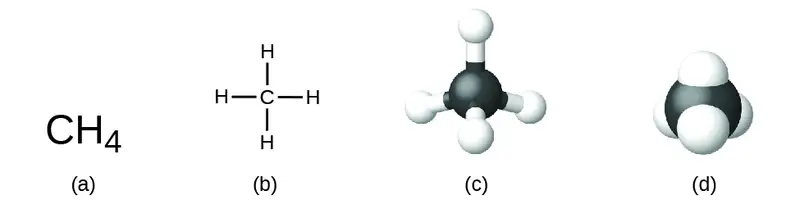
Although many elements consist of discrete, individual atoms, some exist as molecules made up of two or more atoms of the element chemically bonded together. For example, most samples of the elements hydrogen, oxygen, and nitrogen are composed of molecules that contain two atoms each (called diatomic molecules) and thus have the molecular formulas H2, O2, and N2, respectively. Other elements commonly found as diatomic molecules are fluorine (F2), chlorine (Cl2), bromine (Br2), and iodine (I2). The most common form of the element sulfur is composed of molecules that consist of eight atoms of sulfur; its molecular formula is S8 (Figure 2.17).
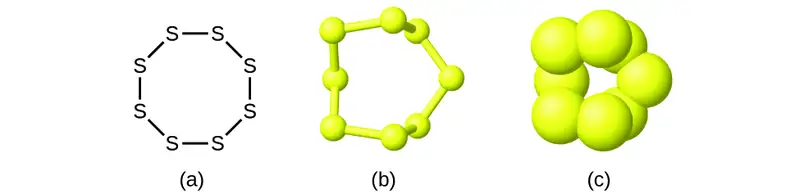
It is important to note that a subscript following a symbol and a number in front of a symbol do not represent the same thing; for example, H2 and 2H represent distinctly different species. H2 is a molecular formula; it represents a diatomic molecule of hydrogen, consisting of two atoms of the element that are chemically bonded together. The expression 2H, on the other hand, indicates two separate hydrogen atoms that are not combined as a unit. The expression 2H2 represents two molecules of diatomic hydrogen (Figure 2.18).
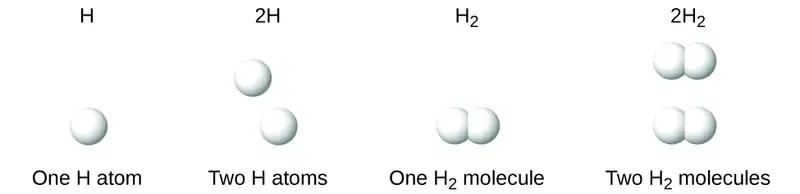
Compounds are formed when two or more elements chemically combine, resulting in the formation of bonds. For example, hydrogen and oxygen can react to form water, and sodium and chlorine can react to form table salt. We sometimes describe the composition of these compounds with an empirical formula, which indicates the types of atoms present and the simplest whole-number ratio of the number of atoms (or ions) in the compound. For example, titanium dioxide (used as pigment in white paint and in the thick, white, blocking type of sunscreen) has an empirical formula of TiO2. This identifies the elements titanium (Ti) and oxygen (O) as the constituents of titanium dioxide, and indicates the presence of twice as many atoms of the element oxygen as atoms of the element titanium (Figure 2.19).
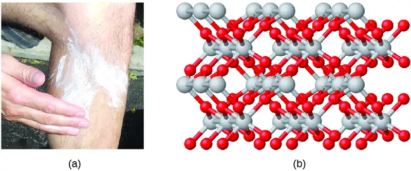
As discussed previously, we can describe a compound with a molecular formula, in which the subscripts indicate the actual numbers of atoms of each element in a molecule of the compound. In many cases, the molecular formula of a substance is derived from experimental determination of both its empirical formula and its molecular mass (the sum of atomic masses for all atoms composing the molecule). For example, it can be determined experimentally that benzene contains two elements, carbon (C) and hydrogen (H), and that for every carbon atom in benzene, there is one hydrogen atom. Thus, the empirical formula is CH. An experimental determination of the molecular mass reveals that a molecule of benzene contains six carbon atoms and six hydrogen atoms, so the molecular formula for benzene is C6H6 (Figure 2.20).
![Figure A shows that benzene is composed of six carbons shaped like a hexagon. Every other bond between the carbon atoms is a double bond. Each carbon also has a single bonded hydrogen atom. Figure B shows a 3-D, ball-and-stick drawing of benzene. The six carbon atoms are black spheres while the six hydrogen atoms are smaller, white spheres. Figure C is a space-filling model of benzene which shows that most of the interior space is occupied by the carbon atoms. The hydrogen atoms are embedded in the outside surface of the carbon atoms. Figure d shows a small vial filled with benzene which appears to be clear.](img/cnx-chem-02-04-benzene.webp)
If we know a compound’s formula, we can easily determine the empirical formula. (This is somewhat of an academic exercise; the reverse chronology is generally followed in actual practice.) For example, the molecular formula for acetic acid, the component that gives vinegar its sharp taste, is C2H4O2. This formula indicates that a molecule of acetic acid (Figure 2.21) contains two carbon atoms, four hydrogen atoms, and two oxygen atoms. The ratio of atoms is 2:4:2. Dividing by the lowest common denominator (2) gives the simplest, whole-number ratio of atoms, 1:2:1, so the empirical formula is CH2O. Note that a molecular formula is always a whole-number multiple of an empirical formula.
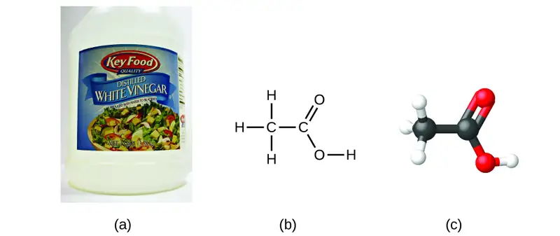
Example 2.6 Empirical and Molecular Formulas
Molecules of glucose (blood sugar) contain 6 carbon atoms, 12 hydrogen atoms, and 6 oxygen atoms. What are the molecular and empirical formulas of glucose?
Solution
The molecular formula is C6H12O6 because one molecule actually contains 6 C, 12 H, and 6 O atoms. The simplest whole-number ratio of C to H to O atoms in glucose is 1:2:1, so the empirical formula is CH2O.
Check Your Learning
A molecule of metaldehyde (a pesticide used for snails and slugs) contains 8 carbon atoms, 16 hydrogen atoms, and 4 oxygen atoms. What are the molecular and empirical formulas of metaldehyde?
Answer:
Molecular formula, C8H16O4; empirical formula, C2H4O
Link to Learning
You can explore molecule building using an online simulation.
Portrait of a Chemist: Paula Hammond
You’ve learned about the evolution of atomic theory, and you’ve started to explore different chemical structures. These structures result in molecules attracting or repelling each other, or help them arrange into our cell membranes or lead them to either spread into thin films or clump into solid masses.
What do these structures mean to scientists, and to us? Essentially, everything. It’s the structure and makeup of a molecule on a virus surface that allows it to attach to one of our cells, and it’s the structure and makeup of antibodies—substances created by our immune system—that block that attachment. Chlorophyll’s structure enables it to use the sun’s energy to make glucose. Chemists and chemical engineers don’t simply observe and understand these structures—they can create new ones.
Paula Hammond does exactly that to solve challenging problems ranging from cancer to energy consumption. She is the chair of the department of chemical engineering at Massachusetts Institute of Technology, and leads a research team focused on assembling unique molecular structures. They have created cancer drug carriers—nanoparticle-sized coatings that enable medicines to travel into tumors without being affected by its defenses—that can deliver pharmaceuticals directly into cancerous tumors. They build these “stealth” molecules layer by layer; using certain properties of electricity and chemical behavior, they can “tune” the coatings to address particular cancers and other variables. This precision approach is necessary to treat cancers more effectively and with less harm to the patient. The company Hammond founded uses similar technology to release medication into cataract patients’ eyes, as well as to improve wound healing.
While Hammond’s research team is composed of established and leading experts such as herself, students certainly play a role. College research labs are typically full of PhD, graduate, and even undergraduate students who participate in the work. And thus chemists and chemical engineers who use their knowledge to solve problems are also supporting the next generation of creators and problem-solvers.
It is important to be aware that it may be possible for the same atoms to be arranged in different ways: Compounds with the same molecular formula may have different atom-to-atom bonding and therefore different structures. For example, could there be another compound with the same formula as acetic acid, C2H4O2? And if so, what would be the structure of its molecules?
If you predict that another compound with the formula C2H4O2 could exist, then you demonstrated good chemical insight and are correct. Two C atoms, four H atoms, and two O atoms can also be arranged to form a methyl formate, which is used in manufacturing, as an insecticide, and for quick-drying finishes. Methyl formate molecules have one of the oxygen atoms between the two carbon atoms, differing from the arrangement in acetic acid molecules. Acetic acid and methyl formate are examples of isomers—compounds with the same chemical formula but different molecular structures (Figure 2.23). Note that this small difference in the arrangement of the atoms has a major effect on their respective chemical properties. You would certainly not want to use a solution of methyl formate as a substitute for a solution of acetic acid (vinegar) when you make salad dressing.
![Figure A shows a structural diagram of acetic acid, C subscript 2 H subscript 4 O subscript 2. Acetic acid contains two carbon atoms connected by a single bond. The left carbon atom forms single bonds with three hydrogen atoms. The carbon on the right forms a double bond with an oxygen atom. The right carbon atom also forms a single bond to an oxygen atom which forms a single bond with a hydrogen atom. Figure B shows a structural diagram of methyl formate, C subscript 2 H subscript 4 O subscript 2. This molecule contains a carbon atom which forms single bonds with three hydrogen atoms, and a single bond with an oxygen atom. The oxygen atom forms a single bond with another carbon atom which forms a double bond with another oxygen atom and a single bond with a hydrogen atom.](img/cnx-chem-02-04-isomers.webp)
Many types of isomers exist (Figure 2.24). Acetic acid and methyl formate are structural isomers, compounds in which the molecules differ in how the atoms are connected to each other. There are also various types of spatial isomers, in which the relative orientations of the atoms in space can be different. For example, the compound carvone (found in caraway seeds, spearmint, and mandarin orange peels) consists of two isomers that are mirror images of each other. S-(+)-carvone smells like caraway, and R-(−)-carvone smells like spearmint.
![The top left portion of this 2 row, 4 column figure shows a structural diagram of positive carvone, C subscript 10 H subscript 14 O. This molecule has a carbon atom which forms a double bond with a C H subscript 2 group and a C H subscript 3 group. The carbon atom also forms a single bond with another carbon atom which is part of a ring. This carbon atom, being part of the ring, forms single bonds with a hydrogen atom, a C H subscript 2 group, and a C H subscript 2 group. The first C H subscript two group forms a single bond with C H which forms a double bond with a carbon atom. This carbon atom forms a single bond with a C H subscript 3 group. The carbon atom forming part of the ring forms a single bond with a carbon atom which forms a double bond with an oxygen atom and a single bond with a C H subscript 2 group to complete the ring. Below the structural diagram of carvone is a photo of caraway seeds. Column 2 contains identical ball and stick representations of the structural diagram in the top left position. The top right portions of these images each contains the letter “S” and there is an arrow pointing downward from the top image to the bottom image. Columns 3 and 4 are representations of negative carvone. The top row in column three depicts a mirrored image of the ball and stick structure to its left, reflected across the y axis. There is a downward pointing arrow to the image below, which is the same structure rotated counter clockwise 180 degrees. Both images in column 3 have an “R” in the top right corner. The image in the first row of column 4 is the same as the lewis structure in the first row of column 1, reflected across the y axis. Below this negative carvone structural diagram is a photo of spearmint leaves.](img/cnx-chem-02-04-isomers2.webp)
Link to Learning
Select this link to view an explanation of isomers, spatial isomers, and why they have different smells (select the video titled “Mirror Molecule: Carvone”).
2.5 The Periodic Table¶
Learning Objectives
By the end of this section, you will be able to:
- State the periodic law and explain the organization of elements in the periodic table
- Predict the general properties of elements based on their location within the periodic table
- Identify metals, nonmetals, and metalloids by their properties and/or location on the periodic table
As early chemists worked to purify ores and discovered more elements, they realized that various elements could be grouped together by their similar chemical behaviors. One such grouping includes lithium (Li), sodium (Na), and potassium (K): These elements all are shiny, conduct heat and electricity well, and have similar chemical properties. A second grouping includes calcium (Ca), strontium (Sr), and barium (Ba), which also are shiny, good conductors of heat and electricity, and have chemical properties in common. However, the specific properties of these two groupings are notably different from each other. For example: Li, Na, and K are much more reactive than are Ca, Sr, and Ba; Li, Na, and K form compounds with oxygen in a ratio of two of their atoms to one oxygen atom, whereas Ca, Sr, and Ba form compounds with one of their atoms to one oxygen atom. Fluorine (F), chlorine (Cl), bromine (Br), and iodine (I) also exhibit similar properties to each other, but these properties are drastically different from those of any of the elements above.
Dimitri Mendeleev in Russia (1869) and Lothar Meyer in Germany (1870) independently recognized that there was a periodic relationship among the properties of the elements known at that time. Both published tables with the elements arranged according to increasing atomic mass. But Mendeleev went one step further than Meyer: He used his table to predict the existence of elements that would have the properties similar to aluminum and silicon, but were yet unknown. The discoveries of gallium (1875) and germanium (1886) provided great support for Mendeleev’s work. Although Mendeleev and Meyer had a long dispute over priority, Mendeleev’s contributions to the development of the periodic table are now more widely recognized (Figure 2.25).
![Figure A shows a photograph of Dimitri Mendeleev. Figure B shows the first periodic table developed by Mendeleev, which had eight groups and twelve periods. In the first group (—, R superscript plus sign 0) is the following information: H = 1, L i = 7, N a = 23, K = 39, (C u = 63), R b = 85, (A g = 108), C a = 183, (—),—, (A u = 199) —. Note that each of these entries corresponds to one of the twelve periods respectively. The second group (—, R 0) contains the following information: (not entry for period 1) B o = 9, 4, M g = 24, C a = 40, Z n = 65, S r = 87, C d = 112, B a = 187, —, —, H g = 200, —. Note the ach of these entries corresponds to one of the twelve periods respectively. Group three (—, R superscript one 0 superscript nine) contains the information: (no entry for period 1), B = 11, A l = 27, 8. — = 44, — = 68, ? Y t = 88, I n = 113, ? D I = 138, —, ? E r = 178, T l = 204, —. Note that each of these entries corresponds to one of the twelve periods respectively. Group four (RH superscript four, R0 superscript eight) contains the following information: (no entry for period 1), C = 12, B i = 28, T i = 48, — = 72, Z r = 90, S n = 118, ? C o = 140, ? L a = 180, P b = 207, T h = 231. Note that each of these entries corresponds to one of the twelve periods respectively. Group five (R H superscript two, R superscript two 0 superscript five) contains the following information: (no entry for period 1), N = 14, P = 31, V = 51, A s = 75, N b = 94, S b = 122, —, —, T a = 182, B l = 208, —. Note that each of these entries corresponds to one of the twelve periods respectively. Group six (R H superscript two, R 0 superscript three) contains the following information: (no entry for period 1), O = 16, S = 32, C r = 52, S o = 78, M o = 96, T o = 125, —, —, W = 184, —, U = 240. Note that each of these entries corresponds to one of the twelve periods respectively. Group seven (R H , R superscript plus sing, 0 superscript 7) contains the following information: (no entry for period 1), F = 19, C l = 35, 5, M n = 55, B r = 80, — = 100, J = 127, —, —, —, —, —. Note that each of these entries corresponds to one of the twelve periods respectively. Group 8 (—, R 0 superscript four) contains the following information: (no entry for periods 1, 2, 3), in period 4: F o = 56, C o = 59, N i = 59, C u = 63, no entry for period five, in period 6: R u = 104, R h = 104, P d = 106, A g = 108, no entries for periods 7, 8 , or 9, in period 10: O s = 195, I r = 197, P t = 198, A u = 199, no entries for periods 11 or 12.](img/cnx-chem-02-05-mendeleev.webp)
By the twentieth century, it became apparent that the periodic relationship involved atomic numbers rather than atomic masses. The modern statement of this relationship, the periodic law, is as follows: the properties of the elements are periodic functions of their atomic numbers. A modern periodic table arranges the elements in increasing order of their atomic numbers and groups atoms with similar properties in the same vertical column (Figure 2.26). Each box represents an element and contains its atomic number, symbol, average atomic mass, and (sometimes) name. The elements are arranged in seven horizontal rows, called periods or series, and 18 vertical columns, called groups. Groups are labeled at the top of each column. In the United States, the labels traditionally were numerals with capital letters. However, IUPAC recommends that the numbers 1 through 18 be used, and these labels are more common. For the table to fit on a single page, parts of two of the rows, a total of 14 columns, are usually written below the main body of the table.
![The Periodic Table of Elements is shown. The 18 columns are labeled “Group” and the 7 rows are labeled “Period.” Below the table to the right is a box labeled “Color Code” with different colors for metals, metalloids, and nonmetals, as well as solids, liquids, and gases. To the left of this box is an enlarged picture of the upper-left most box on the table. The number 1 is in its upper-left hand corner and is labeled “Atomic number.” The letter “H” is in the middle in red indicating that it is a gas. It is labeled “Symbol.” Below that is the number 1.008 which is labeled “Atomic Mass.” Below that is the word hydrogen which is labeled “name.” The color of the box indicates that it is a nonmetal. Each element will be described in this order: atomic number; name; symbol; whether it is a metal, metalloid, or nonmetal; whether it is a solid, liquid, or gas; and atomic mass. Beginning at the top left of the table, or period 1, group 1, is a box containing “1; hydrogen; H; nonmetal; gas; and 1.008.” There is only one other element box in period 1, group 18, which contains “2; helium; H e; nonmetal; gas; and 4.003.” Period 2, group 1 contains “3; lithium; L i; metal; solid; and 6.94” Group 2 contains “4; beryllium; B e; metal; solid; and 9.012.” Groups 3 through 12 are skipped and group 13 contains “5; boron; B; metalloid; solid; 10.81.” Group 14 contains “6; carbon; C; nonmetal; solid; and 12.01.” Group 15 contains “7; nitrogen; N; nonmetal; gas; and 14.01.” Group 16 contains “8; oxygen; O; nonmetal; gas; and 16.00.” Group 17 contains “9; fluorine; F; nonmetal; gas; and 19.00.” Group 18 contains “10; neon; N e; nonmetal; gas; and 20.18.” Period 3, group 1 contains “11; sodium; N a; metal; solid; and 22.99.” Group 2 contains “12; magnesium; M g; metal; solid; and 24.31.” Groups 3 through 12 are skipped again in period 3 and group 13 contains “13; aluminum; A l; metal; solid; and 26.98.” Group 14 contains “14; silicon; S i; metalloid; solid; and 28.09.” Group 15 contains “15; phosphorous; P; nonmetal; solid; and 30.97.” Group 16 contains “16; sulfur; S; nonmetal; solid; and 32.06.” Group 17 contains “17; chlorine; C l; nonmetal; gas; and 35.45.” Group 18 contains “18; argon; A r; nonmetal; gas; and 39.95.” Period 4, group 1 contains “19; potassium; K; metal; solid; and 39.10.” Group 2 contains “20; calcium; C a; metal; solid; and 40.08.” Group 3 contains “21; scandium; S c; metal; solid; and 44.96.” Group 4 contains “22; titanium; T i; metal; solid; and 47.87.” Group 5 contains “23; vanadium; V; metal; solid; and 50.94.” Group 6 contains “24; chromium; C r; metal; solid; and 52.00.” Group 7 contains “25; manganese; M n; metal; solid; and 54.94.” Group 8 contains “26; iron; F e; metal; solid; and 55.85.” Group 9 contains “27; cobalt; C o; metal; solid; and 58.93.” Group 10 contains “28; nickel; N i; metal; solid; and 58.69.” Group 11 contains “29; copper; C u; metal; solid; and 63.55.” Group 12 contains “30; zinc; Z n; metal; solid; and 65.38.” Group 13 contains “31; gallium; G a; metal; solid; and 69.72.” Group 14 contains “32; germanium; G e; metalloid; solid; and 72.63.” Group 15 contains “33; arsenic; A s; metalloid; solid; and 74.92.” Group 16 contains “34; selenium; S e; nonmetal; solid; and 78.97.” Group 17 contains “35; bromine; B r; nonmetal; liquid; and 79.90.” Group 18 contains “36; krypton; K r; nonmetal; gas; and 83.80.” Period 5, group 1 contains “37; rubidium; R b; metal; solid; and 85.47.” Group 2 contains “38; strontium; S r; metal; solid; and 87.62.” Group 3 contains “39; yttrium; Y; metal; solid; and 88.91.” Group 4 contains “40; zirconium; Z r; metal; solid; and 91.22.” Group 5 contains “41; niobium; N b; metal; solid; and 92.91.” Group 6 contains “42; molybdenum; M o; metal; solid; and 95.95.” Group 7 contains “43; technetium; T c; metal; solid; and 97.” Group 8 contains “44; ruthenium; R u; metal; solid; and 101.1.” Group 9 contains “45; rhodium; R h; metal; solid; and 102.9.” Group 10 contains “46; palladium; P d; metal; solid; and 106.4.” Group 11 contains “47; silver; A g; metal; solid; and 107.9.” Group 12 contains “48; cadmium; C d; metal; solid; and 112.4.” Group 13 contains “49; indium; I n; metal; solid; and 114.8.” Group 14 contains “50; tin; S n; metal; solid; and 118.7.” Group 15 contains “51; antimony; S b; metalloid; solid; and 121.8.” Group 16 contains “52; tellurium; T e; metalloid; solid; and 127.6.” Group 17 contains “53; iodine; I; nonmetal; solid; and 126.9.” Group 18 contains “54; xenon; X e; nonmetal; gas; and 131.3.” Period 6, group 1 contains “55; cesium; C s; metal; solid; and 132.9.” Group 2 contains “56; barium; B a; metal; solid; and 137.3.” Group 3 breaks the pattern. The box has a large arrow pointing to a row of elements below the table with atomic numbers ranging from 57-71. In sequential order by atomic number, the first box in this row contains “57; lanthanum; L a; metal; solid; and 138.9.” To its right, the next is “58; cerium; C e; metal; solid; and 140.1.” Next is “59; praseodymium; P r; metal; solid; and 140.9.” Next is “60; neodymium; N d; metal; solid; and 144.2.” Next is “61; promethium; P m; metal; solid; and 145.” Next is “62; samarium; S m; metal; solid; and 150.4.” Next is “63; europium; E u; metal; solid; and 152.0.” Next is “64; gadolinium; G d; metal; solid; and 157.3.” Next is “65; terbium; T b; metal; solid; and 158.9.” Next is “66; dysprosium; D y; metal; solid; and 162.5.” Next is “67; holmium; H o; metal; solid; and 164.9.” Next is “68; erbium; E r; metal; solid; and 167.3.” Next is “69; thulium; T m; metal; solid; and 168.9.” Next is “70; ytterbium; Y b; metal; solid; and 173.1.” The last in this special row is “71; lutetium; L u; metal; solid; and 175.0.” Continuing in period 6, group 4 contains “72; hafnium; H f; metal; solid; and 178.5.” Group 5 contains “73; tantalum; T a; metal; solid; and 180.9.” Group 6 contains “74; tungsten; W; metal; solid; and 183.8.” Group 7 contains “75; rhenium; R e; metal; solid; and 186.2.” Group 8 contains “76; osmium; O s; metal; solid; and 190.2.” Group 9 contains “77; iridium; I r; metal; solid; and 192.2.” Group 10 contains “78; platinum; P t; metal; solid; and 195.1.” Group 11 contains “79; gold; A u; metal; solid; and 197.0.” Group 12 contains “80; mercury; H g; metal; liquid; and 200.6.” Group 13 contains “81; thallium; T l; metal; solid; and 204.4.” Group 14 contains “82; lead; P b; metal; solid; and 207.2.” Group 15 contains “83; bismuth; B i; metal; solid; and 209.0.” Group 16 contains “84; polonium; P o; metal; solid; and 209.” Group 17 contains “85; astatine; A t; metalloid; solid; and 210.” Group 18 contains “86; radon; R n; nonmetal; gas; and 222.” Period 7, group 1 contains “87; francium; F r; metal; solid; and 223.” Group 2 contains “88; radium; R a; metal; solid; and 226.” Group 3 breaks the pattern much like what occurs in period 6. A large arrow points from the box in period 7, group 3 to a special row containing the elements with atomic numbers ranging from 89-103, just below the row which contains atomic numbers 57-71. In sequential order by atomic number, the first box in this row contains “89; actinium; A c; metal; solid; and 227.” To its right, the next is “90; thorium; T h; metal; solid; and 232.0.” Next is “91; protactinium; P a; metal; solid; and 231.0.” Next is “92; uranium; U; metal; solid; and 238.0.” Next is “93; neptunium; N p; metal; solid; and N p.” Next is “94; plutonium; P u; metal; solid; and 244.” Next is “95; americium; A m; metal; solid; and 243.” Next is “96; curium; C m; metal; solid; and 247.” Next is “97; berkelium; B k; metal; solid; and 247.” Next is “98; californium; C f; metal; solid; and 251.” Next is “99; einsteinium; E s; metal; solid; and 252.” Next is “100; fermium; F m; metal; solid; and 257.” Next is “101; mendelevium; M d; metal; solid; and 258.” Next is “102; nobelium; N o; metal; solid; and 259.” The last in this special row is “103; lawrencium; L r; metal; solid; and 262.” Continuing in period 7, group 4 contains “104; rutherfordium; R f; metal; solid; and 267.” Group 5 contains “105; dubnium; D b; metal; solid; and 270.” Group 6 contains “106; seaborgium; S g; metal; solid; and 271.” Group 7 contains “107; bohrium; B h; metal; solid; and 270.” Group 8 contains “108; hassium; H s; metal; solid; and 277.” Group 9 contains “109; meitnerium; M t; not indicated; solid; and 276.” Group 10 contains “110; darmstadtium; D s; not indicated; solid; and 281.” Group 11 contains “111; roentgenium; R g; not indicated; solid; and 282.” Group 12 contains “112; copernicium; C n; metal; liquid; and 285.” Group 13 contains “113; ununtrium; U u t; not indicated; solid; and 285.” Group 14 contains “114; flerovium; F l; not indicated; solid; and 289.” Group 15 contains “115; ununpentium; U u p; not indicated; solid; and 288.” Group 16 contains “116; livermorium; L v; not indicated; solid; and 293.” Group 17 contains “117; ununseptium; U u s; not indicated; solid; and 294.” Group 18 contains “118; ununoctium; U u o; not indicated; solid; and 294.”](img/cnx-chem-02-05-pertable1.webp)
Even after the periodic nature of elements and the table itself were widely accepted, gaps remained. Mendeleev had predicted, and others including Henry Moseley had later confirmed, that there should be elements below Manganese in Group 7. German chemists Ida Tacke and Walter Noddack set out to find the elements, a quest being pursued by scientists around the world. Their method was unique in that they did not only consider the properties of manganese, but also the elements horizontally adjacent to the missing elements 43 and 75 on the table. Thus, by investigating ores containing minerals of ruthenium (Ru), tungsten (W), osmium (Os), and so on, they were able to identify naturally occurring elements that helped complete the table. Rhenium, one of their discoveries, was one of the last natural elements to be discovered and is the last stable element to be discovered. (Francium, the last natural element to be discovered, was identified by Marguerite Perey in 1939.)
Many elements differ dramatically in their chemical and physical properties, but some elements are similar in their behaviors. For example, many elements appear shiny, are malleable (able to be deformed without breaking) and ductile (can be drawn into wires), and conduct heat and electricity well. Other elements are not shiny, malleable, or ductile, and are poor conductors of heat and electricity. We can sort the elements into large classes with common properties: metals (elements that are shiny, malleable, good conductors of heat and electricity—shaded yellow); nonmetals (elements that appear dull, poor conductors of heat and electricity—shaded green); and metalloids (elements that conduct heat and electricity moderately well, and possess some properties of metals and some properties of nonmetals—shaded purple).
The elements can also be classified into the main-group elements (or representative elements) in the columns labeled 1, 2, and 13–18; the transition metals in the columns labeled 3–122; and inner transition metals in the two rows at the bottom of the table (the top-row elements are called lanthanides and the bottom-row elements are actinides; Figure 2.27). The elements can be subdivided further by more specific properties, such as the composition of the compounds they form. For example, the elements in group 1 (the first column) form compounds that consist of one atom of the element and one atom of hydrogen. These elements (except hydrogen) are known as alkali metals, and they all have similar chemical properties. The elements in group 2 (the second column) form compounds consisting of one atom of the element and two atoms of hydrogen: These are called alkaline earth metals, with similar properties among members of that group. Other groups with specific names are the pnictogens (group 15), chalcogens (group 16), halogens (group 17), and the noble gases (group 18, also known as inert gases). The groups can also be referred to by the first element of the group: For example, the chalcogens can be called the oxygen group or oxygen family. Hydrogen is a unique, nonmetallic element with properties similar to both group 1 and group 17 elements. For that reason, hydrogen may be shown at the top of both groups, or by itself.
![This diagram combines the groups and periods of the periodic table based on their similar properties. Group 1 contains the alkali metals, group 2 contains the earth alkaline metals, group 15 contains the pnictogens, group 16 contains the chalcogens, group 17 contains the halogens and group 18 contains the noble gases. The main group elements consist of groups 1, 2, and 12 through 18. Therefore, most of the transition metals, which are contained in groups 3 through 11, are not main group elements. The lanthanides and actinides are called out at the bottom of the periodic table.](img/cnx-chem-02-05-pertable2.webp)
Link to Learning
Click on this link for an interactive periodic table, which you can use to explore the properties of the elements (includes podcasts and videos of each element). You may also want to try this one that shows photos of all the elements.
Example 2.7 Naming Groups of Elements
Atoms of each of the following elements are essential for life. Give the group name for the following elements:
(a) chlorine
(b) calcium
(c) sodium
(d) sulfur
Solution
The family names are as follows:
(a) halogen
(b) alkaline earth metal
(c) alkali metal
(d) chalcogen
Check Your Learning
Give the group name for each of the following elements:
(a) krypton
(b) selenium
(c) barium
(d) lithium
Answer:
(a) noble gas; (b) chalcogen; (c) alkaline earth metal; (d) alkali metal
As you will learn in your further study of chemistry, elements in groups often behave in a somewhat similar manner. This is partly due to the number of electrons in their outer shell and their similar readiness to bond. These shared properties can have far-ranging implications in nature, science, and medicine. For example, when Gertrude Elion and George Hitchens were investigating ways to interrupt cell and virus replication to fight diseases, they utilized the similarity between sulfur and oxygen (both in Group 16) and their capacity to bond in similar ways. Elion focused on purines, which are key components of DNA and which contain oxygen. She found that by introducing sulfur-based compounds (called purine analogues) that mimic the structure of purines, molecules within DNA would bond to the analogues rather than the "regular" DNA purine. With the normal DNA bonding and structure altered, Elion successfully interrupted cell replication. At its core, the strategy worked because of the similarity between sulfur and oxygen. Her discovery led directly to important treatments for leukemia. Overall, Elion's work with George Hitchens not only led to more treatments, but also changed the entire methodology of drug development. By using specific elements and compounds to target specific aspects of tumor cells, viruses, and bacteria, they laid the groundwork for many of today's most common and important medicines, used to help millions of people each year. They were awarded the Nobel Prize in 1988.
In studying the periodic table, you might have noticed something about the atomic masses of some of the elements. Element 43 (technetium), element 61 (promethium), and most of the elements with atomic number 84 (polonium) and higher have their atomic mass given in square brackets. This is done for elements that consist entirely of unstable, radioactive isotopes (you will learn more about radioactivity in the nuclear chemistry chapter). An average atomic weight cannot be determined for these elements because their radioisotopes may vary significantly in relative abundance, depending on the source, or may not even exist in nature. The number in square brackets is the atomic mass number (an approximate atomic mass) of the most stable isotope of that element.
2.6 Ionic and Molecular Compounds¶
Learning Objectives
By the end of this section, you will be able to:
- Define ionic and molecular (covalent) compounds
- Predict the type of compound formed from elements based on their location within the periodic table
- Determine formulas for simple ionic compounds
In ordinary chemical reactions, the nucleus of each atom (and thus the identity of the element) remains unchanged. Electrons, however, can be added to atoms by transfer from other atoms, lost by transfer to other atoms, or shared with other atoms. The transfer and sharing of electrons among atoms govern the chemistry of the elements. During the formation of some compounds, atoms gain or lose electrons, and form electrically charged particles called ions (Figure 2.28).
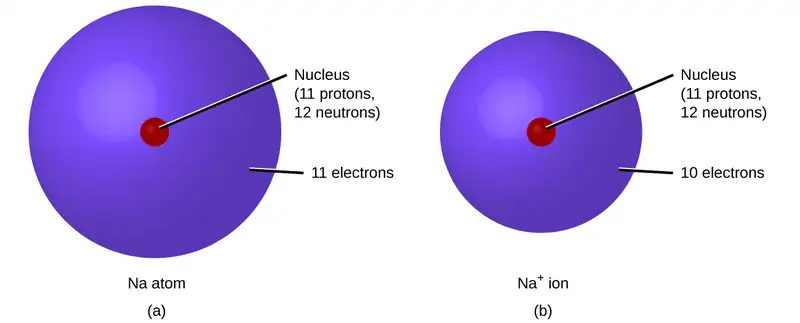
You can use the periodic table to predict whether an atom will form an anion or a cation, and you can often predict the charge of the resulting ion. Atoms of many main-group metals lose enough electrons to leave them with the same number of electrons as an atom of the preceding noble gas. To illustrate, an atom of an alkali metal (group 1) loses one electron and forms a cation with a 1+ charge; an alkaline earth metal (group 2) loses two electrons and forms a cation with a 2+ charge, and so on. For example, a neutral calcium atom, with 20 protons and 20 electrons, readily loses two electrons. This results in a cation with 20 protons, 18 electrons, and a 2+ charge. It has the same number of electrons as atoms of the preceding noble gas, argon, and is symbolized Ca2+. The name of a metal ion is the same as the name of the metal atom from which it forms, so Ca2+ is called a calcium ion.
When atoms of nonmetal elements form ions, they generally gain enough electrons to give them the same number of electrons as an atom of the next noble gas in the periodic table. Atoms of group 17 gain one electron and form anions with a 1− charge; atoms of group 16 gain two electrons and form ions with a 2− charge, and so on. For example, the neutral bromine atom, with 35 protons and 35 electrons, can gain one electron to provide it with 36 electrons. This results in an anion with 35 protons, 36 electrons, and a 1− charge. It has the same number of electrons as atoms of the next noble gas, krypton, and is symbolized Br−. (A discussion of the theory supporting the favored status of noble gas electron numbers reflected in these predictive rules for ion formation is provided in a later chapter of this text.)
Note the usefulness of the periodic table in predicting likely ion formation and charge (Figure 2.29). Moving from the far left to the right on the periodic table, main-group elements tend to form cations with a charge equal to the group number. That is, group 1 elements form 1+ ions; group 2 elements form 2+ ions, and so on. Moving from the far right to the left on the periodic table, elements often form anions with a negative charge equal to the number of groups moved left from the noble gases. For example, group 17 elements (one group left of the noble gases) form 1− ions; group 16 elements (two groups left) form 2− ions, and so on. This trend can be used as a guide in many cases, but its predictive value decreases when moving toward the center of the periodic table. In fact, transition metals and some other metals often exhibit variable charges that are not predictable by their location in the table. For example, copper can form ions with a 1+ or 2+ charge, and iron can form ions with a 2+ or 3+ charge.
![Group one of the periodic table contains L i superscript plus sign in period 2, N a superscript plus sign in period 3, K superscript plus sign in period 4, R b superscript plus sign in period 5, C s superscript plus sign in period 6, and F r superscript plus sign in period 7. Group two contains B e superscript 2 plus sign in period 2, M g superscript 2 plus sign in period 3, C a superscript 2 plus sign in period 4, S r superscript 2 plus sign in period 5, B a superscript 2 plus sign in period 6, and R a superscript 2 plus sign in period 7. Group six contains C r superscript 3 plus sign and C r superscript 6 plus sign in period 4. Group seven contains M n superscript 2 plus sign in period 4. Group eight contains F e superscript 2 plus sign and F e superscript 3 plus sign in period 4. Group nine contains C o superscript 2 plus sign in period 4. Group ten contains N i superscript 2 plus sign in period 4, and P t superscript 2 plus sign in period 6. Group 11 contains C U superscript plus sign and C U superscript 2 plus sign in period 4, A g superscript plus sign in period 5, and A u superscript plus sign and A u superscript 3 plus sign in period 6. Group 12 contains Z n superscript 2 plus sign in period 4, C d superscript 2 plus sign in period 5, and H g subscript 2 superscript 2 plus sign and H g superscript 2 plus sign in period 6. Group 13 contains A l superscript 3 plus sign in period 3. Group 14 contains C superscript 4 negative sign in period 2. Group 15 contains N superscript 3 negative sign in period 2, P superscript 3 negative sign in period 3, and A s superscript 3 negative sign in period 4. Group 16 contains O superscript 2 negative sign in period 2, S superscript 2 negative sign in period 3, S e superscript 2 negative sign in period 4 and T e superscript 2 negative sign in period 5. Group 17 contains F superscript negative sign in period 2, C l superscript negative sign in period 3, B r superscript negative sign in period 4, I superscript negative sign in period 5, and A t superscript negative sign in period 6. Group 18 contains H e in period 1, N e in period 2, A r in period 3, K r in period 4, X e in period 5 and R n in period 6.](img/cnx-chem-02-06-ioncharges.webp)
Example 2.8 Composition of Ions
An ion found in some compounds used as antiperspirants contains 13 protons and 10 electrons. What is its symbol?
Solution
Because the number of protons remains unchanged when an atom forms an ion, the atomic number of the element must be 13. Knowing this lets us use the periodic table to identify the element as Al (aluminum). The Al atom has lost three electrons and thus has three more positive charges (13) than it has electrons (10). This is the aluminum cation, Al3+.
Check Your Learning
Give the symbol and name for the ion with 34 protons and 36 electrons.
Answer:
Se2−, the selenide ion
Example 2.9 Formation of Ions
Magnesium and nitrogen react to form an ionic compound. Predict which forms an anion, which forms a cation, and the charges of each ion. Write the symbol for each ion and name them.
Solution
Magnesium’s position in the periodic table (group 2) tells us that it is a metal. Metals form positive ions (cations). A magnesium atom must lose two electrons to have the same number electrons as an atom of the previous noble gas, neon. Thus, a magnesium atom will form a cation with two fewer electrons than protons and a charge of 2+. The symbol for the ion is Mg2+, and it is called a magnesium ion.
Nitrogen’s position in the periodic table (group 15) reveals that it is a nonmetal. Nonmetals form negative ions (anions). A nitrogen atom must gain three electrons to have the same number of electrons as an atom of the following noble gas, neon. Thus, a nitrogen atom will form an anion with three more electrons than protons and a charge of 3−. The symbol for the ion is N3−, and it is called a nitride ion.
Check Your Learning
Aluminum and carbon react to form an ionic compound. Predict which forms an anion, which forms a cation, and the charges of each ion. Write the symbol for each ion and name them.
Answer:
Al will form a cation with a charge of 3+: Al3+, an aluminum ion. Carbon will form an anion with a charge of 4−: C4−, a carbide ion.
The ions that we have discussed so far are called monatomic ions, that is, they are ions formed from only one atom. We also find many polyatomic ions. These ions, which act as discrete units, are electrically charged molecules (a group of bonded atoms with an overall charge). Some of the more important polyatomic ions are listed in Table 2.5. Oxyanions are polyatomic ions that contain one or more oxygen atoms. At this point in your study of chemistry, you should memorize the names, formulas, and charges of the most common polyatomic ions. Because you will use them repeatedly, they will soon become familiar.
Table 2.5
| Common Polyatomic Ions | |||
|---|---|---|---|
| Name | Formula | Related Acid | Formula |
| ammonium | \(\text{NH}_{4}{}^{+}\) | ||
| hydronium | \(\text{H}_{3}\text{O}^{+}\) | ||
| peroxide | \(\text{O}_{2}{}^{2-}\) | ||
| hydroxide | \(\text{OH}^{-}\) | ||
| acetate | \(\text{CH}_{3}\text{COO}^{-}\) | acetic acid | CH3COOH |
| cyanide | CN− | hydrocyanic acid | HCN |
| azide | \(\text{N}_{3}{}^{-}\) | hydrazoic acid | HN3 |
| carbonate | \(\text{CO}_{3}{}^{2-}\) | carbonic acid | H2CO3 |
| bicarbonate | \(\text{HCO}_{3}{}^{-}\) | ||
| nitrate | \(\text{NO}_{3}{}^{-}\) | nitric acid | HNO3 |
| nitrite | \(\text{NO}_{2}{}^{-}\) | nitrous acid | HNO2 |
| sulfate | \(\text{SO}_{4}{}^{2-}\) | sulfuric acid | H2SO4 |
| hydrogen sulfate | \(\text{HSO}_{4}{}^{-}\) | ||
| sulfite | \(\text{SO}_{3}{}^{2-}\) | sulfurous acid | H2SO3 |
| hydrogen sulfite | \(\text{HSO}_{3}{}^{-}\) | ||
| phosphate | \(\text{PO}_{4}{}^{3-}\) | phosphoric acid | H3PO4 |
| hydrogen phosphate | \(\text{HPO}_{4}{}^{2-}\) | ||
| dihydrogen phosphate | \(\text{H}_{2}\text{PO}_{4}{}^{-}\) | ||
| perchlorate | \(\text{ClO}_{4}{}^{-}\) | perchloric acid | HClO4 |
| chlorate | \(\text{ClO}_{3}{}^{-}\) | chloric acid | HClO3 |
| chlorite | \(\text{ClO}_{2}{}^{-}\) | chlorous acid | HClO2 |
| hypochlorite | ClO− | hypochlorous acid | HClO |
| chromate | \(\text{CrO}_{4}{}^{2-}\) | chromic acid | H2CrO4 |
| dichromate | \(\text{Cr}_{2}\text{O}_{7}{}^{2-}\) | dichromic acid | H2Cr2O7 |
| permanganate | \(\text{MnO}_{4}{}^{-}\) | permanganic acid | HMnO4 |
Note that there is a system for naming some polyatomic ions; -ate and -ite are suffixes designating polyatomic ions containing more or fewer oxygen atoms. Per- (short for “hyper”) and hypo- (meaning “under”) are prefixes meaning more oxygen atoms than -ate and fewer oxygen atoms than -ite, respectively. For example, perchlorate is \(\text{ClO}_{4}{}^{-}{,}\) chlorate is \(\text{ClO}_{3}{}^{-}{,}\) chlorite is \(\text{ClO}_{2}{}^{-}\) and hypochlorite is ClO−. Unfortunately, the number of oxygen atoms corresponding to a given suffix or prefix is not consistent; for example, nitrate is \(\text{NO}_{3}{}^{-}\) while sulfate is \(\text{SO}_{4}{}^{2-}.\) This will be covered in more detail in the next module on nomenclature.
The nature of the attractive forces that hold atoms or ions together within a compound is the basis for classifying chemical bonding. When electrons are transferred and ions form, ionic bonds result. Ionic bonds are electrostatic forces of attraction, that is, the attractive forces experienced between objects of opposite electrical charge (in this case, cations and anions). When electrons are “shared” and molecules form, covalent bonds result. Covalent bonds are the attractive forces between the positively charged nuclei of the bonded atoms and one or more pairs of electrons that are located between the atoms. Compounds are classified as ionic or molecular (covalent) on the basis of the bonds present in them.
Ionic Compounds¶
When an element composed of atoms that readily lose electrons (a metal) reacts with an element composed of atoms that readily gain electrons (a nonmetal), a transfer of electrons usually occurs, producing ions. The compound formed by this transfer is stabilized by the electrostatic attractions (ionic bonds) between the ions of opposite charge present in the compound. For example, when each sodium atom in a sample of sodium metal (group 1) gives up one electron to form a sodium cation, Na+, and each chlorine atom in a sample of chlorine gas (group 17) accepts one electron to form a chloride anion, Cl−, the resulting compound, NaCl, is composed of sodium ions and chloride ions in the ratio of one Na+ ion for each Cl− ion. Similarly, each calcium atom (group 2) can give up two electrons and transfer one to each of two chlorine atoms to form CaCl2, which is composed of Ca2+ and Cl− ions in the ratio of one Ca2+ ion to two Cl− ions.
A compound that contains ions and is held together by ionic bonds is called an ionic compound. The periodic table can help us recognize many of the compounds that are ionic: When a metal is combined with one or more nonmetals, the compound is usually ionic. This guideline works well for predicting ionic compound formation for most of the compounds typically encountered in an introductory chemistry course. However, it is not always true (for example, aluminum chloride, AlCl3, is not ionic).
You can often recognize ionic compounds because of their properties. Ionic compounds are solids that typically melt at high temperatures and boil at even higher temperatures. For example, sodium chloride melts at 801 °C and boils at 1413 °C. (As a comparison, the molecular compound water melts at 0 °C and boils at 100 °C.) In solid form, an ionic compound is not electrically conductive because its ions are unable to flow (“electricity” is the flow of charged particles). When molten, however, it can conduct electricity because its ions are able to move freely through the liquid (Figure 2.30).
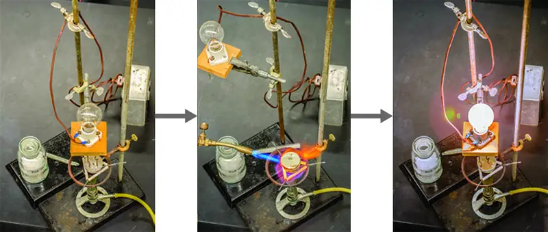
Link to Learning
Watch this video to see a mixture of salts melt and conduct electricity.
In every ionic compound, the total number of positive charges of the cations equals the total number of negative charges of the anions. Thus, ionic compounds are electrically neutral overall, even though they contain positive and negative ions. We can use this observation to help us write the formula of an ionic compound. The formula of an ionic compound must have a ratio of ions such that the numbers of positive and negative charges are equal.
Example 2.10 Predicting the Formula of an Ionic Compound
The gemstone sapphire (Figure 2.31) is mostly a compound of aluminum and oxygen that contains aluminum cations, Al3+, and oxygen anions, O2−. What is the formula of this compound?
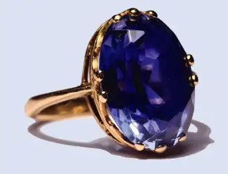
Solution
Because the ionic compound must be electrically neutral, it must have the same number of positive and negative charges. Two aluminum ions, each with a charge of 3+, would give us six positive charges, and three oxide ions, each with a charge of 2−, would give us six negative charges. The formula would be Al2O3.
Check Your Learning
Predict the formula of the ionic compound formed between the sodium cation, Na+, and the sulfide anion, S2−.
Answer:
Na2S
Many ionic compounds contain polyatomic ions (Table 2.5) as the cation, the anion, or both. As with simple ionic compounds, these compounds must also be electrically neutral, so their formulas can be predicted by treating the polyatomic ions as discrete units. We use parentheses in a formula to indicate a group of atoms that behave as a unit. For example, the formula for calcium phosphate, one of the minerals in our bones, is Ca3(PO4)2. This formula indicates that there are three calcium ions (Ca2+) for every two phosphate \((\text{PO}_{4}{}^{3-})\) groups. The \(\text{PO}_{4}{}^{3-}\) groups are discrete units, each consisting of one phosphorus atom and four oxygen atoms, and having an overall charge of 3−. The compound is electrically neutral, and its formula shows a total count of three Ca, two P, and eight O atoms.
Example 2.11 Predicting the Formula of a Compound with a Polyatomic Anion
Baking powder contains calcium dihydrogen phosphate, an ionic compound composed of the ions Ca2+ and \(\text{H}_{2}\text{PO}_{4}{}^{-}.\) What is the formula of this compound?
Solution
The positive and negative charges must balance, and this ionic compound must be electrically neutral. Thus, we must have two negative charges to balance the 2+ charge of the calcium ion. This requires a ratio of one Ca2+ ion to two \(\text{H}_{2}\text{PO}_{4}{}^{-}\) ions. We designate this by enclosing the formula for the dihydrogen phosphate ion in parentheses and adding a subscript 2. The formula is Ca(H2PO4)2.
Check Your Learning
Predict the formula of the ionic compound formed between the lithium ion and the peroxide ion, \(\text{O}_{2}{}^{2-}\) (Hint: Use the periodic table to predict the sign and the charge on the lithium ion.)
Answer:
Li2O2
Because an ionic compound is not made up of single, discrete molecules, it may not be properly symbolized using a molecular formula. Instead, ionic compounds must be symbolized by a formula indicating the relative numbers of its constituent ions. For compounds containing only monatomic ions (such as NaCl) and for many compounds containing polyatomic ions (such as CaSO4), these formulas are just the empirical formulas introduced earlier in this chapter. However, the formulas for some ionic compounds containing polyatomic ions are not empirical formulas. For example, the ionic compound sodium oxalate is comprised of Na+ and \(\text{C}_{2}\text{O}_{4}{}^{2-}\) ions combined in a 2:1 ratio, and its formula is written as Na2C2O4. The subscripts in this formula are not the smallest-possible whole numbers, as each can be divided by 2 to yield the empirical formula, NaCO2. This is not the accepted formula for sodium oxalate, however, as it does not accurately represent the compound’s polyatomic anion, \(\text{C}_{2}\text{O}_{4}{}^{2-}.\)
Molecular Compounds¶
Many compounds do not contain ions but instead consist solely of discrete, neutral molecules. These molecular compounds (covalent compounds) result when atoms share, rather than transfer (gain or lose), electrons. Covalent bonding is an important and extensive concept in chemistry, and it will be treated in considerable detail in a later chapter of this text. We can often identify molecular compounds on the basis of their physical properties. Under normal conditions, molecular compounds often exist as gases, low-boiling liquids, and low-melting solids, although many important exceptions exist.
Whereas ionic compounds are usually formed when a metal and a nonmetal combine, covalent compounds are usually formed by a combination of nonmetals. Thus, the periodic table can help us recognize many of the compounds that are covalent. While we can use the positions of a compound’s elements in the periodic table to predict whether it is ionic or covalent at this point in our study of chemistry, you should be aware that this is a very simplistic approach that does not account for a number of interesting exceptions. Shades of gray exist between ionic and molecular compounds, and you’ll learn more about those later.
Example 2.12 Predicting the Type of Bonding in Compounds
Predict whether the following compounds are ionic or molecular:
(a) KI, the compound used as a source of iodine in table salt
(b) H2O2, the bleach and disinfectant hydrogen peroxide
(c) CHCl3, the anesthetic chloroform
(d) Li2CO3, a source of lithium in antidepressants
Solution
(a) Potassium (group 1) is a metal, and iodine (group 17) is a nonmetal; KI is predicted to be ionic.
(b) Hydrogen (group 1) is a nonmetal, and oxygen (group 16) is a nonmetal; H2O2 is predicted to be molecular.
(c) Carbon (group 14) is a nonmetal, hydrogen (group 1) is a nonmetal, and chlorine (group 17) is a nonmetal; CHCl3 is predicted to be molecular.
(d) Lithium (group 1) is a metal, and carbonate is a polyatomic ion; Li2CO3 is predicted to be ionic.
Check Your Learning
Using the periodic table, predict whether the following compounds are ionic or covalent:
(a) SO2
(b) CaF2
(c) N2H4
(d) Al2(SO4)3
Answer:
(a) molecular; (b) ionic; (c) molecular; (d) ionic
2.7 Chemical Nomenclature¶
Learning Objectives
By the end of this section, you will be able to:
- Derive names for common types of inorganic compounds using a systematic approach
Nomenclature, a collection of rules for naming things, is important in science and in many other situations. This module describes an approach that is used to name simple ionic and molecular compounds, such as NaCl, CaCO3, and N2O4. The simplest of these are binary compounds, those containing only two elements, but we will also consider how to name ionic compounds containing polyatomic ions, and one specific, very important class of compounds known as acids (subsequent chapters in this text will focus on these compounds in great detail). We will limit our attention here to inorganic compounds, compounds that are composed principally of elements other than carbon, and will follow the nomenclature guidelines proposed by IUPAC. The rules for organic compounds, in which carbon is the principle element, will be treated in a later chapter on organic chemistry.
Ionic Compounds¶
To name an inorganic compound, we need to consider the answers to several questions. First, is the compound ionic or molecular? If the compound is ionic, does the metal form ions of only one type (fixed charge) or more than one type (variable charge)? Are the ions monatomic or polyatomic? If the compound is molecular, does it contain hydrogen? If so, does it also contain oxygen? From the answers we derive, we place the compound in an appropriate category and then name it accordingly.
Compounds Containing Only Monatomic Ions¶
The name of a binary compound containing monatomic ions consists of the name of the cation (the name of the metal) followed by the name of the anion (the name of the nonmetallic element with its ending replaced by the suffix –ide). Some examples are given in Table 2.6.
Table 2.6
| Names of Some Ionic Compounds | |
|---|---|
| NaCl, sodium chloride | Na2O, sodium oxide |
| KBr, potassium bromide | CdS, cadmium sulfide |
| CaI2, calcium iodide | Mg3N2, magnesium nitride |
| CsF, cesium fluoride | Ca3P2, calcium phosphide |
| LiCl, lithium chloride | Al4C3, aluminum carbide |
Compounds Containing Polyatomic Ions¶
Compounds containing polyatomic ions are named similarly to those containing only monatomic ions, i.e. by naming first the cation and then the anion. Examples are shown in Table 2.7.
Table 2.7
| Names of Some Polyatomic Ionic Compounds | ||
|---|---|---|
| KC2H3O2, potassium acetate | NH4Cl, ammonium chloride | |
| NaHCO3, sodium bicarbonate | CaSO4, calcium sulfate | |
| Al2(CO3)3, aluminum carbonate | Mg3(PO4)2, magnesium phosphate | |
Chemistry in Everyday Life: Ionic Compounds in Your Cabinets
Every day you encounter and use a large number of ionic compounds. Some of these compounds, where they are found, and what they are used for are listed in Table 2.8. Look at the label or ingredients list on the various products that you use during the next few days, and see if you run into any of those in this table, or find other ionic compounds that you could now name or write as a formula.
Table 2.8
| Everyday Ionic Compounds | |
|---|---|
| Ionic Compound | Use |
| NaCl, sodium chloride | ordinary table salt |
| KI, potassium iodide | added to “iodized” salt for thyroid health |
| NaF, sodium fluoride | ingredient in toothpaste |
| NaHCO3, sodium bicarbonate | baking soda; used in cooking (and as antacid) |
| Na2CO3, sodium carbonate | washing soda; used in cleaning agents |
| NaOCl, sodium hypochlorite | active ingredient in household bleach |
| CaCO3 calcium carbonate | ingredient in antacids |
| Mg(OH)2, magnesium hydroxide | ingredient in antacids |
| Al(OH)3, aluminum hydroxide | ingredient in antacids |
| NaOH, sodium hydroxide | lye; used as drain cleaner |
| K3PO4, potassium phosphate | food additive (many purposes) |
| MgSO4, magnesium sulfate | added to purified water |
| Na2HPO4, sodium hydrogen phosphate | anti-caking agent; used in powdered products |
| Na2SO3, sodium sulfite | preservative |
Compounds Containing a Metal Ion with a Variable Charge¶
Most of the transition metals and some main group metals can form two or more cations with different charges. Compounds of these metals with nonmetals are named with the same method as compounds in the first category, except the charge of the metal ion is specified by a Roman numeral in parentheses after the name of the metal. The charge of the metal ion is determined from the formula of the compound and the charge of the anion. For example, consider binary ionic compounds of iron and chlorine. Iron typically exhibits a charge of either 2+ or 3+ (see Figure 2.29), and the two corresponding compound formulas are FeCl2 and FeCl3. The simplest name, “iron chloride,” will, in this case, be ambiguous, as it does not distinguish between these two compounds. In cases like this, the charge of the metal ion is included as a Roman numeral in parentheses immediately following the metal name. These two compounds are then unambiguously named iron(II) chloride and iron(III) chloride, respectively. Other examples are provided in Table 2.9.
Table 2.9
| Some Ionic Compounds with Variably Charged Metal Ions | |
|---|---|
| Compound | Name |
| FeCl2 | iron(II) chloride |
| FeCl3 | iron(III) chloride |
| Hg2O | mercury(I) oxide |
| HgO | mercury(II) oxide |
| SnF2 | tin(II) fluoride |
| SnF4 | tin(IV) fluoride |
Out-of-date nomenclature used the suffixes –ic and –ous to designate metals with higher and lower charges, respectively: Iron(III) chloride, FeCl3, was previously called ferric chloride, and iron(II) chloride, FeCl2, was known as ferrous chloride. Though this naming convention has been largely abandoned by the scientific community, it remains in use by some segments of industry. For example, you may see the words stannous fluoride on a tube of toothpaste. This represents the formula SnF2, which is more properly named tin(II) fluoride. The other fluoride of tin is SnF4, which was previously called stannic fluoride but is now named tin(IV) fluoride.
Ionic Hydrates¶
Ionic compounds that contain water molecules as integral components of their crystals are called hydrates. The name for an ionic hydrate is derived by adding a term to the name for the anhydrous (meaning “not hydrated”) compound that indicates the number of water molecules associated with each formula unit of the compound. The added word begins with a Greek prefix denoting the number of water molecules (see Table 2.10) and ends with “hydrate.” For example, the anhydrous compound copper(II) sulfate also exists as a hydrate containing five water molecules and named copper(II) sulfate pentahydrate. Washing soda is the common name for a hydrate of sodium carbonate containing 10 water molecules; the systematic name is sodium carbonate decahydrate.
Formulas for ionic hydrates are written by appending a vertically centered dot, a coefficient representing the number of water molecules, and the formula for water. The two examples mentioned in the previous paragraph are represented by the formulas
Table 2.10
| Nomenclature Prefixes | |||
|---|---|---|---|
| Number | Prefix | Number | Prefix |
| 1 (sometimes omitted) | mono- | 6 | hexa- |
| 2 | di- | 7 | hepta- |
| 3 | tri- | 8 | octa- |
| 4 | tetra- | 9 | nona- |
| 5 | penta- | 10 | deca- |
Example 2.13 Naming Ionic Compounds
Name the following ionic compounds
(a) Fe2S3
(b) CuSe
(c) GaN
(d) MgSO4·7H2O
(e) Ti2(SO4)3
Solution
The anions in these compounds have a fixed negative charge (S2−, Se2−, N3−, and \(\text{SO}_{4}{}^{2-}),\) and the compounds must be neutral. Because the total number of positive charges in each compound must equal the total number of negative charges, the positive ions must be Fe3+, Cu2+, Ga3+, Mg2+, and Ti3+. These charges are used in the names of the metal ions:
(a) iron(III) sulfide
(b) copper(II) selenide
(c) gallium(III) nitride
(d) magnesium sulfate heptahydrate
(e) titanium(III) sulfate
Check Your Learning
Write the formulas of the following ionic compounds:
(a) chromium(III) phosphide
(b) mercury(II) sulfide
(c) manganese(II) phosphate
(d) copper(I) oxide
(e) iron(III) chloride dihydrate
Answer:
(a) CrP; (b) HgS; (c) Mn3(PO4)2; (d) Cu2O; (e) FeCl3·2H2O
Chemistry in Everyday Life: Erin Brockovich and Chromium Contamination
In the early 1990s, legal file clerk Erin Brockovich (Figure 2.32) discovered a high rate of serious illnesses in the small town of Hinckley, California. Her investigation eventually linked the illnesses to groundwater contaminated by Cr(VI) used by Pacific Gas & Electric (PG&E) to fight corrosion in a nearby natural gas pipeline. As dramatized in the film Erin Brockovich (for which Julia Roberts won an Oscar), Erin and lawyer Edward Masry sued PG&E for contaminating the water near Hinckley in 1993. The settlement they won in 1996—$333 million—was the largest amount ever awarded for a direct-action lawsuit in the US at that time.
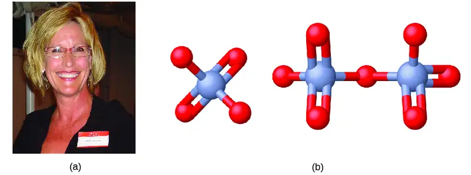
Chromium compounds are widely used in industry, such as for chrome plating, in dye-making, as preservatives, and to prevent corrosion in cooling tower water, as occurred near Hinckley. In the environment, chromium exists primarily in either the Cr(III) or Cr(VI) forms. Cr(III), an ingredient of many vitamin and nutritional supplements, forms compounds that are not very soluble in water, and it has low toxicity. But Cr(VI) is much more toxic and forms compounds that are reasonably soluble in water. Exposure to small amounts of Cr(VI) can lead to damage of the respiratory, gastrointestinal, and immune systems, as well as the kidneys, liver, blood, and skin.
Despite cleanup efforts, Cr(VI) groundwater contamination remains a problem in Hinckley and other locations across the globe. A 2010 study by the Environmental Working Group found that of 35 US cities tested, 31 had higher levels of Cr(VI) in their tap water than the public health goal of 0.02 parts per billion set by the California Environmental Protection Agency.
Molecular (Covalent) Compounds¶
The bonding characteristics of inorganic molecular compounds are different from ionic compounds, and they are named using a different system as well. The charges of cations and anions dictate their ratios in ionic compounds, so specifying the names of the ions provides sufficient information to determine chemical formulas. However, because covalent bonding allows for significant variation in the combination ratios of the atoms in a molecule, the names for molecular compounds must explicitly identify these ratios.
Compounds Composed of Two Elements¶
When two nonmetallic elements form a molecular compound, several combination ratios are often possible. For example, carbon and oxygen can form the compounds CO and CO2. Since these are different substances with different properties, they cannot both have the same name (they cannot both be called carbon oxide). To deal with this situation, we use a naming method that is somewhat similar to that used for ionic compounds, but with added prefixes to specify the numbers of atoms of each element. The name of the more metallic element (the one farther to the left and/or bottom of the periodic table) is first, followed by the name of the more nonmetallic element (the one farther to the right and/or top) with its ending changed to the suffix –ide. The numbers of atoms of each element are designated by the Greek prefixes shown in Table 2.10.
When only one atom of the first element is present, the prefix mono- is usually deleted from that part. Thus, CO is named carbon monoxide, and CO2 is called carbon dioxide. When two vowels are adjacent, the ending vowel in the Greek prefix is sometimes omitted in common practice, though IUPAC guidelines only permit this for the duplicate letters o in monooxide, which is correctly written as monoxide. For purposes of the nomenclature exercises in this text, students may choose to follow either approach. Some examples demonstrating this Some other examples are shown in Table 2.11.
Table 2.11
| Names of Some Molecular Compounds Composed of Two Elements | |||
|---|---|---|---|
| Compound | Name | Compound | Name |
| SO2 | sulfur dioxide | BCl3 | boron trichloride |
| SO3 | sulfur trioxide | SF6 | sulfur hexafluoride |
| NO2 | nitrogen dioxide | PF5 | phosphorus pentafluoride |
| N2O4 | dinitrogen tetroxide | P4O10 | tetraphosphorus decaoxide |
| N2O5 | dinitrogen pentoxide | IF7 | iodine heptafluoride |
There are a few common names that you will encounter as you continue your study of chemistry. For example, although NO is often called nitric oxide, its proper name is nitrogen monoxide. Similarly, N2O is known as nitrous oxide even though our rules would specify the name dinitrogen monoxide. (And H2O is usually called water, not dihydrogen monoxide.) You should commit to memory the common names of compounds as you encounter them.
Example 2.14 Naming Covalent Compounds
Name the following covalent compounds:
(a) SF6
(b) N2O3
(c) Cl2O7
(d) P4O6
Solution
Because these compounds consist solely of nonmetals, we use prefixes to designate the number of atoms of each element:
(a) sulfur hexafluoride
(b) dinitrogen trioxide
(c) dichlorine heptoxide
(d) tetraphosphorus hexoxide
Check Your Learning
Write the formulas for the following compounds:
(a) phosphorus pentachloride
(b) dinitrogen monoxide
(c) iodine heptafluoride
(d) carbon tetrachloride
Answer:
(a) PCl5; (b) N2O; (c) IF7; (d) CCl4
Link to Learning
The following website provides practice with naming chemical compounds and writing chemical formulas. You can choose binary, polyatomic, and variable charge ionic compounds, as well as molecular compounds.
Binary Acids¶
Some compounds containing hydrogen are members of an important class of substances known as acids. The chemistry of these compounds is explored in more detail in later chapters of this text, but for now, it will suffice to note that many acids release hydrogen ions, H+, when dissolved in water. To denote this distinct chemical property, a mixture of water with an acid is given a name derived from the compound’s name. If the compound is a binary acid (comprised of hydrogen and one other nonmetallic element):
- The word “hydrogen” is changed to the prefix hydro-
- The other nonmetallic element name is modified by adding the suffix -ic
- The word “acid” is added as a second word
For example, when the gas HCl (hydrogen chloride) is dissolved in water, the solution is called hydrochloric acid. Several other examples of this nomenclature are shown in Table 2.12.
Table 2.12
| Names of Some Simple Acids | |
|---|---|
| Name of Gas | Name of Acid |
| HF(g), hydrogen fluoride | HF(aq), hydrofluoric acid |
| HCl(g), hydrogen chloride | HCl(aq), hydrochloric acid |
| HBr(g), hydrogen bromide | HBr(aq), hydrobromic acid |
| HI(g), hydrogen iodide | HI(aq), hydroiodic acid |
| H2S(g), hydrogen sulfide | H2S(aq), hydrosulfuric acid |
Oxyacids¶
Many compounds containing three or more elements (such as organic compounds or coordination compounds) are subject to specialized nomenclature rules that you will learn later. However, we will briefly discuss the important compounds known as oxyacids, compounds that contain hydrogen, oxygen, and at least one other element, and are bonded in such a way as to impart acidic properties to the compound (you will learn the details of this in a later chapter). Typical oxyacids consist of hydrogen combined with a polyatomic, oxygen-containing ion. To name oxyacids:
- Omit “hydrogen”
- Start with the root name of the anion
- Replace –ate with –ic, or –ite with –ous
- Add “acid”
For example, consider H2CO3 (which you might be tempted to call “hydrogen carbonate”). To name this correctly, “hydrogen” is omitted; the –ate of carbonate is replace with –ic; and acid is added—so its name is carbonic acid. Other examples are given in Table 2.13. There are some exceptions to the general naming method (e.g., H2SO4 is called sulfuric acid, not sulfic acid, and H2SO3 is sulfurous, not sulfous, acid).
Table 2.13
| Names of Common Oxyacids | ||
|---|---|---|
| Formula | Anion Name | Acid Name |
| HC2H3O2 | acetate | acetic acid |
| HNO3 | nitrate | nitric acid |
| HNO2 | nitrite | nitrous acid |
| HClO4 | perchlorate | perchloric acid |
| H2CO3 | carbonate | carbonic acid |
| H2SO4 | sulfate | sulfuric acid |
| H2SO3 | sulfite | sulfurous acid |
| H3PO4 | phosphate | phosphoric acid |
Chapter Review¶
Key Terms¶
- actinide
- inner transition metal in the bottom of the bottom two rows of the periodic table
- alkali metal
- element in group 1
- alkaline earth metal
- element in group 2
- alpha particle (α particle)
- positively charged particle consisting of two protons and two neutrons
- anion
- negatively charged atom or molecule (contains more electrons than protons)
- atomic mass
- average mass of atoms of an element, expressed in amu
- atomic mass unit (amu)
- (also, unified atomic mass unit, u, or Dalton, Da) unit of mass equal to \(\frac{1}{12}\) of the mass of a 12C atom
- atomic number (Z)
- number of protons in the nucleus of an atom
- binary acid
- compound that contains hydrogen and one other element, bonded in a way that imparts acidic properties to the compound (ability to release H+ ions when dissolved in water)
- binary compound
- compound containing two different elements.
- cation
- positively charged atom or molecule (contains fewer electrons than protons)
- chalcogen
- element in group 16
- chemical symbol
- one-, two-, or three-letter abbreviation used to represent an element or its atoms
- covalent bond
- attractive force between the nuclei of a molecule’s atoms and pairs of electrons between the atoms
- covalent compound
- (also, molecular compound) composed of molecules formed by atoms of two or more different elements
- Dalton (Da)
- alternative unit equivalent to the atomic mass unit
- Dalton’s atomic theory
- set of postulates that established the fundamental properties of atoms
- electron
- negatively charged, subatomic particle of relatively low mass located outside the nucleus
- empirical formula
- formula showing the composition of a compound given as the simplest whole-number ratio of atoms
- fundamental unit of charge
- (also called the elementary charge) equals the magnitude of the charge of an electron (e) with e = 1.602 \(\times\) 10−19 C
- group
- vertical column of the periodic table
- halogen
- element in group 17
- hydrate
- compound containing one or more water molecules bound within its crystals
- inert gas
- (also, noble gas) element in group 18
- inner transition metal
- (also, lanthanide or actinide) element in the bottom two rows; if in the first row, also called lanthanide, or if in the second row, also called actinide
- ion
- electrically charged atom or molecule (contains unequal numbers of protons and electrons)
- ionic bond
- electrostatic forces of attraction between the oppositely charged ions of an ionic compound
- ionic compound
- compound composed of cations and anions combined in ratios, yielding an electrically neutral substance
- isomers
- compounds with the same chemical formula but different structures
- isotopes
- atoms that contain the same number of protons but different numbers of neutrons
- lanthanide
- inner transition metal in the top of the bottom two rows of the periodic table
- law of constant composition
- (also, law of definite proportions) all samples of a pure compound contain the same elements in the same proportions by mass
- law of definite proportions
- (also, law of constant composition) all samples of a pure compound contain the same elements in the same proportions by mass
- law of multiple proportions
- when two elements react to form more than one compound, a fixed mass of one element will react with masses of the other element in a ratio of small whole numbers
- main-group element
- (also, representative element) element in groups 1, 2, and 13–18
- mass number (A)
- sum of the numbers of neutrons and protons in the nucleus of an atom
- metal
- element that is shiny, malleable, good conductor of heat and electricity
- metalloid
- element that conducts heat and electricity moderately well, and possesses some properties of metals and some properties of nonmetals
- molecular compound
- (also, covalent compound) composed of molecules formed by atoms of two or more different elements
- molecular formula
- formula indicating the composition of a molecule of a compound and giving the actual number of atoms of each element in a molecule of the compound.
- monatomic ion
- ion composed of a single atom
- neutron
- uncharged, subatomic particle located in the nucleus
- noble gas
- (also, inert gas) element in group 18
- nomenclature
- system of rules for naming objects of interest
- nonmetal
- element that appears dull, poor conductor of heat and electricity
- nucleus
- massive, positively charged center of an atom made up of protons and neutrons
- oxyacid
- compound that contains hydrogen, oxygen, and one other element, bonded in a way that imparts acidic properties to the compound (ability to release H+ ions when dissolved in water)
- oxyanion
- polyatomic anion composed of a central atom bonded to oxygen atoms
- period
- (also, series) horizontal row of the periodic table
- periodic law
- properties of the elements are periodic function of their atomic numbers.
- periodic table
- table of the elements that places elements with similar chemical properties close together
- pnictogen
- element in group 15
- polyatomic ion
- ion composed of more than one atom
- proton
- positively charged, subatomic particle located in the nucleus
- representative element
- (also, main-group element) element in columns 1, 2, and 12–18
- series
- (also, period) horizontal row of the period table
- spatial isomers
- compounds in which the relative orientations of the atoms in space differ
- structural formula
- shows the atoms in a molecule and how they are connected
- structural isomer
- one of two substances that have the same molecular formula but different physical and chemical properties because their atoms are bonded differently
- transition metal
- element in groups 3–12 (more strictly defined, 3–11; see chapter on transition metals and coordination chemistry)
- unified atomic mass unit (u)
- alternative unit equivalent to the atomic mass unit
Key Equations¶
| \(\text{average mass}=\displaystyle \sum_{i}{(\text{fractional abundance}\:\times\:\text{isotopic mass})}_{i}\) |
Key Concepts and Summary¶
2.1 Early Ideas in Atomic Theory¶
The ancient Greeks proposed that matter consists of extremely small particles called atoms. Dalton postulated that each element has a characteristic type of atom that differs in properties from atoms of all other elements, and that atoms of different elements can combine in fixed, small, whole-number ratios to form compounds. Samples of a particular compound all have the same elemental proportions by mass. When two elements form different compounds, a given mass of one element will combine with masses of the other element in a small, whole-number ratio. During any chemical change, atoms are neither created nor destroyed.
2.2 Evolution of Atomic Theory¶
Although no one has actually seen the inside of an atom, experiments have demonstrated much about atomic structure. Thomson’s cathode ray tube showed that atoms contain small, negatively charged particles called electrons. Millikan discovered that there is a fundamental electric charge—the charge of an electron. Rutherford’s gold foil experiment showed that atoms have a small, dense, positively charged nucleus; the positively charged particles within the nucleus are called protons. Chadwick discovered that the nucleus also contains neutral particles called neutrons. Soddy demonstrated that atoms of the same element can differ in mass; these are called isotopes.
2.3 Atomic Structure and Symbolism¶
An atom consists of a small, positively charged nucleus surrounded by electrons. The nucleus contains protons and neutrons; its diameter is about 100,000 times smaller than that of the atom. The mass of one atom is usually expressed in atomic mass units (amu), which is referred to as the atomic mass. An amu is defined as exactly \(\frac{1}{12}\) of the mass of a carbon-12 atom and is equal to 1.6605 \(\times\) 10−24 g.
Protons are relatively heavy particles with a charge of 1+ and a mass of 1.0073 amu. Neutrons are relatively heavy particles with no charge and a mass of 1.0087 amu. Electrons are light particles with a charge of 1− and a mass of 0.00055 amu. The number of protons in the nucleus is called the atomic number (Z) and is the property that defines an atom’s elemental identity. The sum of the numbers of protons and neutrons in the nucleus is called the mass number and, expressed in amu, is approximately equal to the mass of the atom. An atom is neutral when it contains equal numbers of electrons and protons.
Isotopes of an element are atoms with the same atomic number but different mass numbers; isotopes of an element, therefore, differ from each other only in the number of neutrons within the nucleus. When a naturally occurring element is composed of several isotopes, the atomic mass of the element represents the average of the masses of the isotopes involved. A chemical symbol identifies the atoms in a substance using symbols, which are one-, two-, or three-letter abbreviations for the atoms.
2.4 Chemical Formulas¶
A molecular formula uses chemical symbols and subscripts to indicate the exact numbers of different atoms in a molecule or compound. An empirical formula gives the simplest, whole-number ratio of atoms in a compound. A structural formula indicates the bonding arrangement of the atoms in the molecule. Ball-and-stick and space-filling models show the geometric arrangement of atoms in a molecule. Isomers are compounds with the same molecular formula but different arrangements of atoms.
2.5 The Periodic Table¶
The discovery of the periodic recurrence of similar properties among the elements led to the formulation of the periodic table, in which the elements are arranged in order of increasing atomic number in rows known as periods and columns known as groups. Elements in the same group of the periodic table have similar chemical properties. Elements can be classified as metals, metalloids, and nonmetals, or as a main-group elements, transition metals, and inner transition metals. Groups are numbered 1–18 from left to right. The elements in group 1 are known as the alkali metals; those in group 2 are the alkaline earth metals; those in 15 are the pnictogens; those in 16 are the chalcogens; those in 17 are the halogens; and those in 18 are the noble gases.
2.6 Ionic and Molecular Compounds¶
Metals (particularly those in groups 1 and 2) tend to lose the number of electrons that would leave them with the same number of electrons as in the preceding noble gas in the periodic table. By this means, a positively charged ion is formed. Similarly, nonmetals (especially those in groups 16 and 17, and, to a lesser extent, those in Group 15) can gain the number of electrons needed to provide atoms with the same number of electrons as in the next noble gas in the periodic table. Thus, nonmetals tend to form negative ions. Positively charged ions are called cations, and negatively charged ions are called anions. Ions can be either monatomic (containing only one atom) or polyatomic (containing more than one atom).
Compounds that contain ions are called ionic compounds. Ionic compounds generally form from metals and nonmetals. Compounds that do not contain ions, but instead consist of atoms bonded tightly together in molecules (uncharged groups of atoms that behave as a single unit), are called covalent compounds. Covalent compounds usually form from two nonmetals.
2.7 Chemical Nomenclature¶
Chemists use nomenclature rules to clearly name compounds. Ionic and molecular compounds are named using somewhat-different methods. Binary ionic compounds typically consist of a metal and a nonmetal. The name of the metal is written first, followed by the name of the nonmetal with its ending changed to –ide. For example, K2O is called potassium oxide. If the metal can form ions with different charges, a Roman numeral in parentheses follows the name of the metal to specify its charge. Thus, FeCl2 is iron(II) chloride and FeCl3 is iron(III) chloride. Some compounds contain polyatomic ions; the names of common polyatomic ions should be memorized. Molecular compounds can form compounds with different ratios of their elements, so prefixes are used to specify the numbers of atoms of each element in a molecule of the compound. Examples include SF6, sulfur hexafluoride, and N2O4, dinitrogen tetroxide. Acids are an important class of compounds containing hydrogen and having special nomenclature rules. Binary acids are named using the prefix hydro-, changing the –ide suffix to –ic, and adding “acid;” HCl is hydrochloric acid. Oxyacids are named by changing the ending of the anion (–ate to –ic and –ite to –ous), and adding “acid;” H2CO3 is carbonic acid.
Exercises¶
2.1 Early Ideas in Atomic Theory¶
1. In the following drawing, the green spheres represent atoms of a certain element. The purple spheres represent atoms of another element. If the spheres of different elements touch, they are part of a single unit of a compound. The following chemical change represented by these spheres may violate one of the ideas of Dalton’s atomic theory. Which one?
Answer
The starting materials consist of one green sphere and two purple spheres. The products consist of two green spheres and two purple spheres. This violates Dalton’s postulate that that atoms are not created during a chemical change, but are merely redistributed.
2. Which postulate of Dalton’s theory is consistent with the following observation concerning the weights of reactants and products? When 100 grams of solid calcium carbonate is heated, 44 grams of carbon dioxide and 56 grams of calcium oxide are produced.
3. Identify the postulate of Dalton’s theory that is violated by the following observations: 59.95% of one sample of titanium dioxide is titanium; 60.10% of a different sample of titanium dioxide is titanium.
Answer
This statement violates Dalton’s fourth postulate: In a given compound, the numbers of atoms of each type (and thus also the percentage) always have the same ratio.
4. Samples of compound X, Y, and Z are analyzed, with results shown here.
| Compound | Description | Mass of Carbon | Mass of Hydrogen |
|---|---|---|---|
| X | clear, colorless, liquid with strong odor | 1.776 g | 0.148 g |
| Y | clear, colorless, liquid with strong odor | 1.974 g | 0.329 g |
| Z | clear, colorless, liquid with strong odor | 7.812 g | 0.651 g |
Do these data provide example(s) of the law of definite proportions, the law of multiple proportions, neither, or both? What do these data tell you about compounds X, Y, and Z?
2.2 Evolution of Atomic Theory¶
5. The existence of isotopes violates one of the original ideas of Dalton’s atomic theory. Which one?
Answer
Dalton originally thought that all atoms of a particular element had identical properties, including mass. Thus, the concept of isotopes, in which an element has different masses, was a violation of the original idea. To account for the existence of isotopes, the second postulate of his atomic theory was modified to state that atoms of the same element must have identical chemical properties.
6. How are electrons and protons similar? How are they different?
7. How are protons and neutrons similar? How are they different?
Answer
Both are subatomic particles that reside in an atom’s nucleus. Both have approximately the same mass. Protons are positively charged, whereas neutrons are uncharged.
8. Predict and test the behavior of α particles fired at a “plum pudding” model atom.
(a) Predict the paths taken by α particles that are fired at atoms with a Thomson’s plum pudding model structure. Explain why you expect the α particles to take these paths.
(b) If α particles of higher energy than those in (a) are fired at plum pudding atoms, predict how their paths will differ from the lower-energy α particle paths. Explain your reasoning.
(c) Now test your predictions from (a) and (b). Open the Rutherford Scattering simulation and select the “Plum Pudding Atom” tab. Set “Alpha Particles Energy” to “min,” and select “show traces.” Click on the gun to start firing α particles. Does this match your prediction from (a)? If not, explain why the actual path would be that shown in the simulation. Hit the pause button, or “Reset All.” Set “Alpha Particles Energy” to “max,” and start firing α particles. Does this match your prediction from (b)? If not, explain the effect of increased energy on the actual paths as shown in the simulation.
9. Predict and test the behavior of α particles fired at a Rutherford atom model.
(a) Predict the paths taken by α particles that are fired at atoms with a Rutherford atom model structure. Explain why you expect the α particles to take these paths.
(b) If α particles of higher energy than those in (a) are fired at Rutherford atoms, predict how their paths will differ from the lower-energy α particle paths. Explain your reasoning.
(c) Predict how the paths taken by the α particles will differ if they are fired at Rutherford atoms of elements other than gold. What factor do you expect to cause this difference in paths, and why?
(d) Now test your predictions from (a), (b), and (c). Open the Rutherford Scattering simulation and select the “Rutherford Atom” tab. Due to the scale of the simulation, it is best to start with a small nucleus, so select “20” for both protons and neutrons, “min” for energy, show traces, and then start firing α particles. Does this match your prediction from (a)? If not, explain why the actual path would be that shown in the simulation. Pause or reset, set energy to “max,” and start firing α particles. Does this match your prediction from (b)? If not, explain the effect of increased energy on the actual path as shown in the simulation. Pause or reset, select “40” for both protons and neutrons, “min” for energy, show traces, and fire away. Does this match your prediction from (c)? If not, explain why the actual path would be that shown in the simulation. Repeat this with larger numbers of protons and neutrons. What generalization can you make regarding the type of atom and effect on the path of α particles? Be clear and specific.
Answer
(a) The Rutherford atom has a small, positively charged nucleus, so most α particles will pass through empty space far from the nucleus and be undeflected. Those α particles that pass near the nucleus will be deflected from their paths due to positive-positive repulsion. The more directly toward the nucleus the α particles are headed, the larger the deflection angle will be. (b) Higher-energy α particles that pass near the nucleus will still undergo deflection, but the faster they travel, the less the expected angle of deflection. (c) If the nucleus is smaller, the positive charge is smaller and the expected deflections are smaller—both in terms of how closely the α particles pass by the nucleus undeflected and the angle of deflection. If the nucleus is larger, the positive charge is larger and the expected deflections are larger—more α particles will be deflected, and the deflection angles will be larger. (d) The paths followed by the α particles match the predictions from (a), (b), and (c).
2.3 Atomic Structure and Symbolism¶
10. In what way are isotopes of a given element always different? In what way(s) are they always the same?
11. Write the symbol for each of the following ions:
(a) the ion with a 1+ charge, atomic number 55, and mass number 133
(b) the ion with 54 electrons, 53 protons, and 74 neutrons
(c) the ion with atomic number 15, mass number 31, and a 3− charge
(d) the ion with 24 electrons, 30 neutrons, and a 3+ charge
Answer
(a) 133Cs+; (b) 127I−; (c) 31P3−; (d) 57Co3+
12. Write the symbol for each of the following ions:
(a) the ion with a 3+ charge, 28 electrons, and a mass number of 71
(b) the ion with 36 electrons, 35 protons, and 45 neutrons
(c) the ion with 86 electrons, 142 neutrons, and a 4+ charge
(d) the ion with a 2+ charge, atomic number 38, and mass number 87
13. Open the Build an Atom simulation and click on the Atom icon.
(a) Pick any one of the first 10 elements that you would like to build and state its symbol.
(b) Drag protons, neutrons, and electrons onto the atom template to make an atom of your element.
State the numbers of protons, neutrons, and electrons in your atom, as well as the net charge and mass number.
(c) Click on “Net Charge” and “Mass Number,” check your answers to (b), and correct, if needed.
(d) Predict whether your atom will be stable or unstable. State your reasoning.
(e) Check the “Stable/Unstable” box. Was your answer to (d) correct? If not, first predict what you can do to make a stable atom of your element, and then do it and see if it works. Explain your reasoning.
Answer
(a) Carbon-12, 12C; (b) This atom contains six protons and six neutrons. There are six electrons in a neutral 12C atom. The net charge of such a neutral atom is zero, and the mass number is 12. (c) The preceding answers are correct. (d) The atom will be stable since C-12 is a stable isotope of carbon. (e) The preceding answer is correct. Other answers for this exercise are possible if a different element of isotope is chosen.
14. Open the Build an Atom simulation.
(a) Drag protons, neutrons, and electrons onto the atom template to make a neutral atom of Oxygen-16 and give the isotope symbol for this atom.
(b) Now add two more electrons to make an ion and give the symbol for the ion you have created.
15. Open the Build an Atom simulation.
(a) Drag protons, neutrons, and electrons onto the atom template to make a neutral atom of Lithium-6 and give the isotope symbol for this atom.
(b) Now remove one electron to make an ion and give the symbol for the ion you have created.
Answer
(a) Lithium-6 contains three protons, three neutrons, and three electrons. The isotope symbol is 6Li or \({}_{3}^{6}\text{Li}.\) (b) 6Li+ or \({}_{3}^{6}\text{Li}^{+}\)
16. Determine the number of protons, neutrons, and electrons in the following isotopes that are used in medical diagnoses:
(a) atomic number 9, mass number 18, charge of 1−
(b) atomic number 43, mass number 99, charge of 7+
(c) atomic number 53, atomic mass number 131, charge of 1−
(d) atomic number 81, atomic mass number 201, charge of 1+
(e) Name the elements in parts (a), (b), (c), and (d).
17. The following are properties of isotopes of two elements that are essential in our diet. Determine the number of protons, neutrons and electrons in each and name them.
(a) atomic number 26, mass number 58, charge of 2+
(b) atomic number 53, mass number 127, charge of 1−
Answer
(a) Iron, 26 protons, 24 electrons, and 32 neutrons; (b) iodine, 53 protons, 54 electrons, and 74 neutrons
18. Give the number of protons, electrons, and neutrons in neutral atoms of each of the following isotopes:
(a) \({}_{\;5}^{10}\text{B}\)
(b) \({}_{\;80}^{199}\text{Hg}\)
(c) \({}_{29}^{63}\text{Cu}\)
(d) \({}_{\;6}^{13}\text{C}\)
(e) \({}_{34}^{77}\text{Se}\)
19. Give the number of protons, electrons, and neutrons in neutral atoms of each of the following isotopes:
(a) \({}_{3}^{7}\text{Li}\)
(b) \({}_{\;52}^{125}\text{Te}\)
(c) \({}_{\;47}^{109}\text{Ag}\)
(d) \({}_{\;7}^{15}\text{N}\)
(e) \({}_{15}^{31}\text{P}\)
Answer
(a) 3 protons, 3 electrons, 4 neutrons; (b) 52 protons, 52 electrons, 73 neutrons; (c) 47 protons, 47 electrons, 62 neutrons; (d) 7 protons, 7 electrons, 8 neutrons; (e) 15 protons, 15 electrons, 16 neutrons
20. Click on the site and select the “Mix Isotopes” tab, hide the “Percent Composition” and “Average Atomic Mass” boxes, and then select the element boron.
(a) Write the symbols of the isotopes of boron that are shown as naturally occurring in significant amounts.
(b) Predict the relative amounts (percentages) of these boron isotopes found in nature. Explain the reasoning behind your choice.
(c) Add isotopes to the black box to make a mixture that matches your prediction in (b). You may drag isotopes from their bins or click on “More” and then move the sliders to the appropriate amounts.
(d) Reveal the “Percent Composition” and “Average Atomic Mass” boxes. How well does your mixture match with your prediction? If necessary, adjust the isotope amounts to match your prediction.
(e) Select “Nature’s” mix of isotopes and compare it to your prediction. How well does your prediction compare with the naturally occurring mixture? Explain. If necessary, adjust your amounts to make them match “Nature’s” amounts as closely as possible.
21. Repeat Exercise 20 using an element that has three naturally occurring isotopes.
Answer
Let us use neon as an example. Since there are three isotopes, there is no way to be sure to accurately predict the abundances to make the total of 20.18 amu average atomic mass. Let us guess that the abundances are 9% Ne-22, 91% Ne-20, and only a trace of Ne-21. The average mass would be 20.18 amu. Checking the nature’s mix of isotopes shows that the abundances are 90.48% Ne-20, 9.25% Ne-22, and 0.27% Ne-21, so our guessed amounts have to be slightly adjusted.
22. An element has the following natural abundances and isotopic masses: 90.92% abundance with 19.99 amu, 0.26% abundance with 20.99 amu, and 8.82% abundance with 21.99 amu. Calculate the average atomic mass of this element.
23. Average atomic masses listed by IUPAC are based on a study of experimental results. Bromine has two isotopes, 79Br and 81Br, whose masses (78.9183 and 80.9163 amu, respectively) and abundances (50.69% and 49.31%, respectively) were determined in earlier experiments. Calculate the average atomic mass of bromine based on these experiments.
Answer
79.90 amu
24. Variations in average atomic mass may be observed for elements obtained from different sources. Lithium provides an example of this. The isotopic composition of lithium from naturally occurring minerals is 7.5% 6Li and 92.5% 7Li, which have masses of 6.01512 amu and 7.01600 amu, respectively. A commercial source of lithium, recycled from a military source, was 3.75% 6Li (and the rest 7Li). Calculate the average atomic mass values for each of these two sources.
25. The average atomic masses of some elements may vary, depending upon the sources of their ores. Naturally occurring boron consists of two isotopes with accurately known masses (10B, 10.0129 amu and 11B, 11.00931 amu). The actual atomic mass of boron can vary from 10.807 to 10.819, depending on whether the mineral source is from Turkey or the United States. Calculate the percent abundances leading to the two values of the average atomic masses of boron from these two countries.
Answer
Turkey source: 20.3% (of 10.0129 amu isotope); US source: 19.1% (of 10.0129 amu isotope)
26. The 18O:16O abundance ratio in some meteorites is greater than that used to calculate the average atomic mass of oxygen on earth. Is the average mass of an oxygen atom in these meteorites greater than, less than, or equal to that of a terrestrial oxygen atom?
2.4 Chemical Formulas¶
27. Explain why the symbol for an atom of the element oxygen and the formula for a molecule of oxygen differ.
Answer
The symbol for the element oxygen, O, represents both the element and one atom of oxygen. A molecule of oxygen, O2, contains two oxygen atoms; the subscript 2 in the formula must be used to distinguish the diatomic molecule from two single oxygen atoms.
28. Explain why the symbol for the element sulfur and the formula for a molecule of sulfur differ.
29. Write the molecular and empirical formulas of the following compounds:
(a)
(b)
(c)
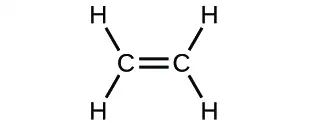
(d)
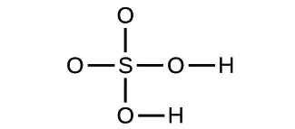
Answer
(a) molecular CO2, empirical CO2; (b) molecular C2H2, empirical CH; (c) molecular C2H4, empirical CH2; (d) molecular H2SO4, empirical H2SO4
30. Write the molecular and empirical formulas of the following compounds:
(a)![Figure A shows a structural diagram of four carbon atoms bonded together into a chain. The two carbon atoms on the left form a double bond with each other. All of the remaining carbon atoms form single bonds with each other. The leftmost carbon also forms single bonds with two hydrogen. The second carbon in the chain forms a single bond with a hydrogen atom. The third carbon in the chain forms a single bond with two hydrogen atoms each. The rightmost carbon forms a single bond with three hydrogen atoms each.](img/cnx-chem-02-04-question4a-img.webp)
(b)
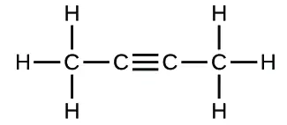
(c)
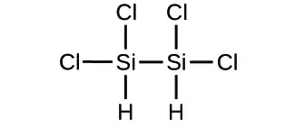
(d)
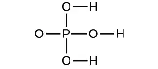
31. Determine the empirical formulas for the following compounds:
(a) caffeine, C8H10N4O2
(b) sucrose, C12H22O11
(c) hydrogen peroxide, H2O2
(d) glucose, C6H12O6
(e) ascorbic acid (vitamin C), C6H8O6
Answer
(a) C4H5N2O; (b) C12H22O11; (c) HO; (d) CH2O; (e) C3H4O3
32. Determine the empirical formulas for the following compounds:
(a) acetic acid, C2H4O2
(b) citric acid, C6H8O7
(c) hydrazine, N2H4
(d) nicotine, C10H14N2
(e) butane, C4H10
33. Write the empirical formulas for the following compounds:
(a)
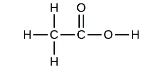
(b)
![Figure B shows a structural diagram containing a leftmost carbon that forms single bonds to three hydrogen atoms each. This leftmost carbon also forms a single bond to a second carbon atom. The second carbon atom forms a double bond with an oxygen atom. The second carbon also forms a single bond to a second oxygen atom. This oxygen atom forms a single bond to a third carbon atom. This third carbon atom forms single bonds with two hydrogen atoms each as well as a single bond with another carbon atom. The rightmost carbon atom forms a single bond with three hydrogen atoms each.](img/cnx-chem-02-04-question7b-img.webp)
Answer
(a) CH2O; (b) C2H4O
34. Open the Build a Molecule simulation and select the “Larger Molecules” tab. Select an appropriate atom’s “Kit” to build a molecule with two carbon and six hydrogen atoms. Drag atoms into the space above the “Kit” to make a molecule. A name will appear when you have made an actual molecule that exists (even if it is not the one you want). You can use the scissors tool to separate atoms if you would like to change the connections. Click on “3D” to see the molecule, and look at both the space-filling and ball-and-stick possibilities.
(a) Draw the structural formula of this molecule and state its name.
(b) Can you arrange these atoms in any way to make a different compound?
35. Use the Build a Molecule simulation to repeat Exercise 34, but build a molecule with two carbons, six hydrogens, and one oxygen.
(a) Draw the structural formula of this molecule and state its name.
(b) Can you arrange these atoms to make a different molecule? If so, draw its structural formula and state its name.
(c) How are the molecules drawn in (a) and (b) the same? How do they differ? What are they called (the type of relationship between these molecules, not their names).?
Answer
(a) ethanol
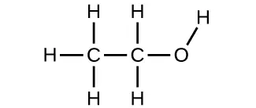
(b) methoxymethane, more commonly known as dimethyl ether
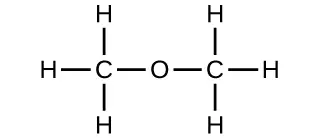
(c) These molecules have the same chemical composition (types and number of atoms) but different chemical structures. They are structural isomers.
36. Use the Build a Molecule simulation to repeat Exercise 34, but build a molecule with three carbons, seven hydrogens, and one chlorine.
(a) Draw the structural formula of this molecule and state its name.
(b) Can you arrange these atoms to make a different molecule? If so, draw its structural formula and state its name.
(c) How are the molecules drawn in (a) and (b) the same? How do they differ? What are they called (the type of relationship between these molecules, not their names)?
2.5 The Periodic Table¶
37. Using the periodic table, classify each of the following elements as a metal or a nonmetal, and then further classify each as a main-group (representative) element, transition metal, or inner transition metal:
(a) uranium
(b) bromine
(c) strontium
(d) neon
(e) gold
(f) americium
(g) rhodium
(h) sulfur
(i) carbon
(j) potassium
Answer
(a) metal, inner transition metal; (b) nonmetal, representative element; (c) metal, representative element; (d) nonmetal, representative element; (e) metal, transition metal; (f) metal, inner transition metal; (g) metal, transition metal; (h) nonmetal, representative element; (i) nonmetal, representative element; (j) metal, representative element
38. Using the periodic table, classify each of the following elements as a metal or a nonmetal, and then further classify each as a main-group (representative) element, transition metal, or inner transition metal:
(a) cobalt
(b) europium
(c) iodine
(d) indium
(e) lithium
(f) oxygen
(g) cadmium
(h) terbium
(i) rhenium
39. Using the periodic table, identify the lightest member of each of the following groups:
(a) noble gases
(b) alkaline earth metals
(c) alkali metals
(d) chalcogens
Answer
(a) He; (b) Be; (c) Li; (d) O
40. Using the periodic table, identify the heaviest member of each of the following groups:
(a) alkali metals
(b) chalcogens
(c) noble gases
(d) alkaline earth metals
41. Use the periodic table to give the name and symbol for each of the following elements:
(a) the noble gas in the same period as germanium
(b) the alkaline earth metal in the same period as selenium
(c) the halogen in the same period as lithium
(d) the chalcogen in the same period as cadmium
Answer
(a) krypton, Kr; (b) calcium, Ca; (c) fluorine, F; (d) tellurium, Te
42. Use the periodic table to give the name and symbol for each of the following elements:
(a) the halogen in the same period as the alkali metal with 11 protons
(b) the alkaline earth metal in the same period with the neutral noble gas with 18 electrons
(c) the noble gas in the same row as an isotope with 30 neutrons and 25 protons
(d) the noble gas in the same period as gold
43. Write a symbol for each of the following neutral isotopes. Include the atomic number and mass number for each.
(a) the alkali metal with 11 protons and a mass number of 23
(b) the noble gas element with 75 neutrons in its nucleus and 54 electrons in the neutral atom
(c) the isotope with 33 protons and 40 neutrons in its nucleus
(d) the alkaline earth metal with 88 electrons and 138 neutrons
Answer
(a) \({}_{11}^{23}\text{Na}\); (b) \({}_{\;54}^{129}\text{Xe}\); (c) \({}_{33}^{73}\text{As}\); (d) \({}_{\;88}^{226}\text{Ra}\)
44. Write a symbol for each of the following neutral isotopes. Include the atomic number and mass number for each.
(a) the chalcogen with a mass number of 125
(b) the halogen whose longest-lived isotope is radioactive
(c) the noble gas, used in lighting, with 10 electrons and 10 neutrons
(d) the lightest alkali metal with three neutrons
2.6 Ionic and Molecular Compounds¶
45. Using the periodic table, predict whether the following chlorides are ionic or covalent: KCl, NCl3, ICl, MgCl2, PCl5, and CCl4.
Answer
Ionic: KCl, MgCl2; Covalent: NCl3, ICl, PCl5, CCl4
46. Using the periodic table, predict whether the following chlorides are ionic or covalent: SiCl4, PCl3, CaCl2, CsCl, CuCl2, and CrCl3.
47. For each of the following compounds, state whether it is ionic or covalent. If it is ionic, write the symbols for the ions involved:
(a) NF3
(b) BaO
(c) (NH4)2CO3
(d) Sr(H2PO4)2
(e) IBr
(f) Na2O
Answer
(a) covalent; (b) ionic, Ba2+, O2−; (c) ionic, \(\text{NH}_{4}{}^{+}{,}\) \(\text{CO}_{3}{}^{2-};\) (d) ionic, Sr2+, \(\text{H}_{2}\text{PO}_{4}{}^{-};\) (e) covalent; (f) ionic, Na+, O2−
48. For each of the following compounds, state whether it is ionic or covalent, and if it is ionic, write the symbols for the ions involved:
(a) KClO4
(b) Mg(C2H3O2)2
(c) H2S
(d) Ag2S
(e) N2Cl4
(f) Co(NO3)2
49. For each of the following pairs of ions, write the formula of the compound they will form:
(a) Ca2+, S2−
(b) \(\text{NH}_{4}{}^{+}{,}\) \(\text{SO}_{4}{}^{2-}\)
(c) Al3+, Br−
(d) Na+, \(\text{HPO}_{4}{}^{2-}\)
(e) Mg2+, \(\text{PO}_{4}{}^{3-}\)
Answer
(a) CaS; (b) (NH4)2SO4; (c) AlBr3; (d) Na2HPO4; (e) Mg3 (PO4)2
50. For each of the following pairs of ions, write the formula of the compound they will form:
(a) K+, O2−
(b) \(\text{NH}_{4}{}^{+}{,}\) \(\text{PO}_{4}{}^{3-}\)
(c) Al3+, O2−
(d) Na+, \(\text{CO}_{3}{}^{2-}\)
(e) Ba2+, \(\text{PO}_{4}{}^{3-}\)
2.7 Chemical Nomenclature¶
51. Name the following compounds:
(a) CsCl
(b) BaO
(c) K2S
(d) BeCl2
(e) HBr
(f) AlF3
Answer
(a) cesium chloride; (b) barium oxide; (c) potassium sulfide; (d) beryllium chloride; (e) hydrogen bromide; (f) aluminum fluoride
52. Name the following compounds:
(a) NaF
(b) Rb2O
(c) BCl3
(d) H2Se
(e) P4O6
(f) ICl3
53. Write the formulas of the following compounds:
(a) rubidium bromide
(b) magnesium selenide
(c) sodium oxide
(d) calcium chloride
(e) hydrogen fluoride
(f) gallium phosphide
(g) aluminum bromide
(h) ammonium sulfate
Answer
(a) RbBr; (b) MgSe; (c) Na2O; (d) CaCl2; (e) HF; (f) GaP; (g) AlBr3; (h) (NH4)2SO4
54. Write the formulas of the following compounds:
(a) lithium carbonate
(b) sodium perchlorate
(c) barium hydroxide
(d) ammonium carbonate
(e) sulfuric acid
(f) calcium acetate
(g) magnesium phosphate
(h) sodium sulfite
55. Write the formulas of the following compounds:
(a) chlorine dioxide
(b) dinitrogen tetraoxide
(c) potassium phosphide
(d) silver sulfide
(e) aluminum fluoride trihydrate
(f) silicon dioxide
Answer
(a) ClO2; (b) N2O4; (c) K3P; (d) Ag2S; (e) AIF3·3H2O; (f) SiO2
56. Write the formulas of the following compounds:
(a) barium chloride
(b) magnesium nitride
(c) sulfur dioxide
(d) nitrogen trichloride
(e) dinitrogen trioxide
(f) tin(IV) chloride
57. Each of the following compounds contains a metal that can exhibit more than one ionic charge. Name these compounds:
(a) Cr2O3
(b) FeCl2
(c) CrO3
(d) TiCl4
(e) CoCl2·6H2O
(f) MoS2
Answer
(a) chromium(III) oxide; (b) iron(II) chloride; (c) chromium(VI) oxide; (d) titanium(IV) chloride; (e) cobalt(II) chloride hexahydrate; (f) molybdenum(IV) sulfide
58. Each of the following compounds contains a metal that can exhibit more than one ionic charge. Name these compounds:
(a) NiCO3
(b) MoO3
(c) Co(NO3)2
(d) V2O5
(e) MnO2
(f) Fe2O3
59. The following ionic compounds are found in common household products. Write the formulas for each compound:
(a) potassium phosphate
(b) copper(II) sulfate
(c) calcium chloride
(d) titanium(IV) oxide
(e) ammonium nitrate
(f) sodium bisulfate (the common name for sodium hydrogen sulfate)
Answer
(a) K3PO4; (b) CuSO4; (c) CaCl2; (d) TiO2; (e) NH4NO3; (f) NaHSO4
60. The following ionic compounds are found in common household products. Name each of the compounds:
(a) Ca(H2PO4)2
(b) FeSO4
(c) CaCO3
(d) MgO
(e) NaNO2
(f) KI
61. What are the IUPAC names of the following compounds?
(a) manganese dioxide
(b) mercurous chloride (Hg2Cl2)
(c) ferric nitrate [Fe(NO3)3]
(d) titanium tetrachloride
(e) cupric bromide (CuBr2)
Answer
(a) manganese(IV) oxide; (b) mercury(I) chloride; (c) iron(III) nitrate; (d) titanium(IV) chloride; (e) copper(II) bromide
Adapted from Chemistry 2e by OpenStax, licensed under CC BY 4.0. Access the original for free at openstax.org. Changes: converted to the web reading format of The Open Book Project.
-
Ernest Rutherford, “The Development of the Theory of Atomic Structure,” ed. J. A. Ratcliffe, in Background to Modern Science, eds. Joseph Needham and Walter Pagel, (Cambridge, UK: Cambridge University Press, 1938), 61–74. Accessed September 22, 2014, https://ia600508.us.archive.org/3/items/backgroundtomode032734mbp/backgroundtomode032734mbp.pdf. ↩
-
Per the IUPAC definition, group 12 elements are not transition metals, though they are often referred to as such. Additional details on this group’s elements are provided in a chapter on transition metals and coordination chemistry. ↩